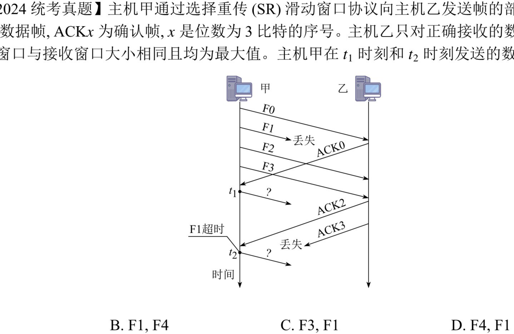
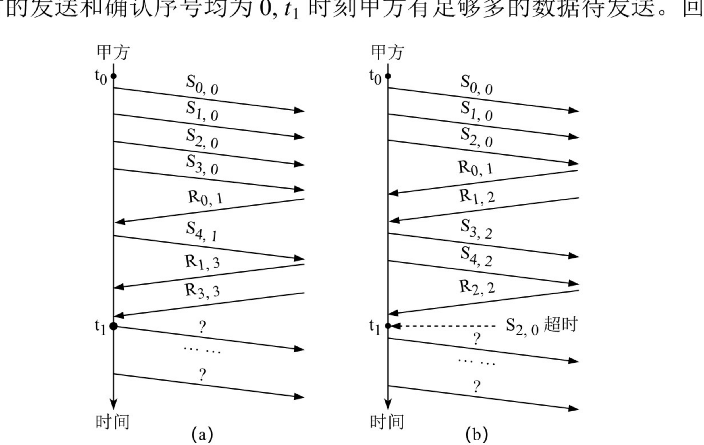
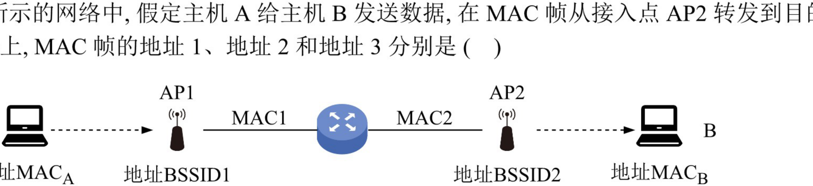
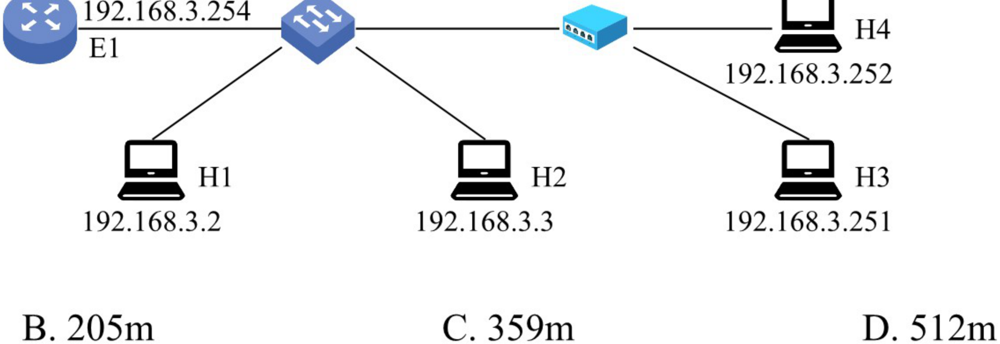
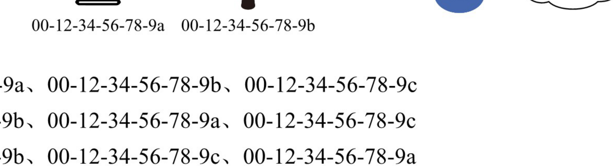
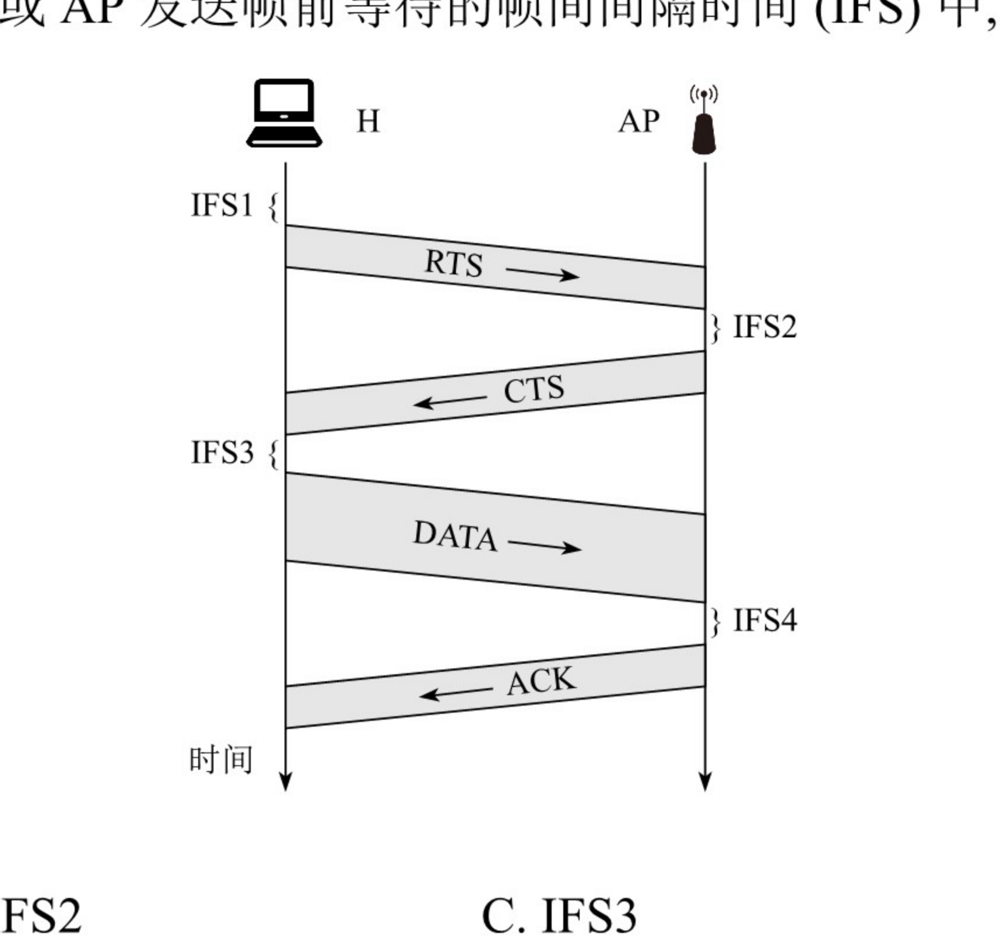
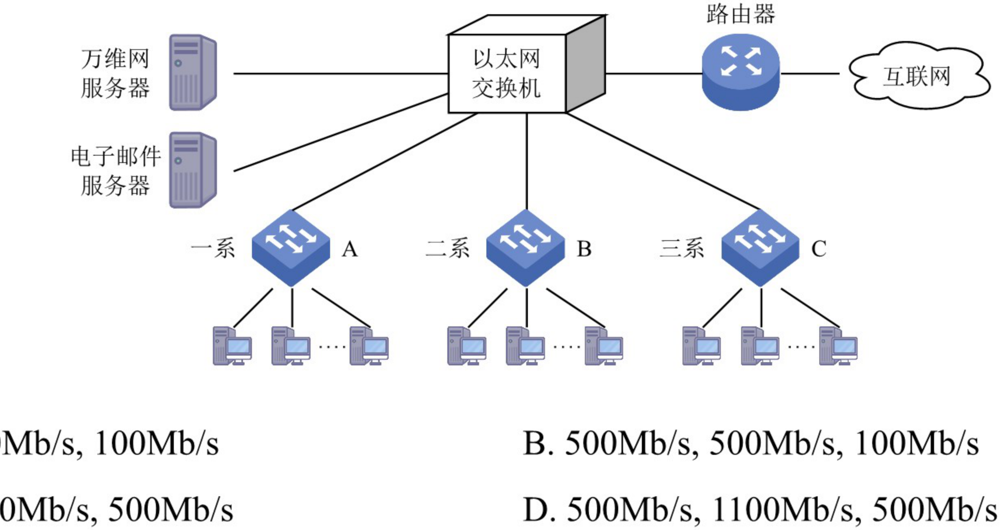
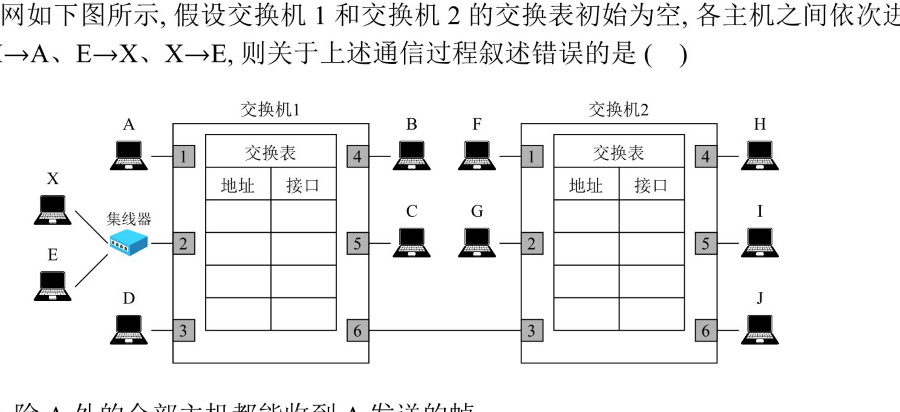
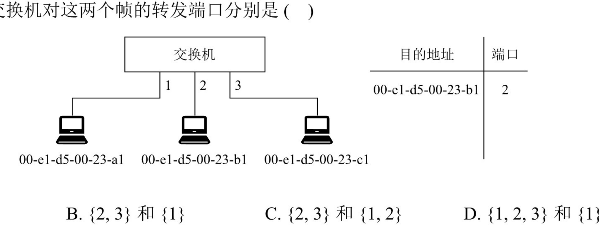
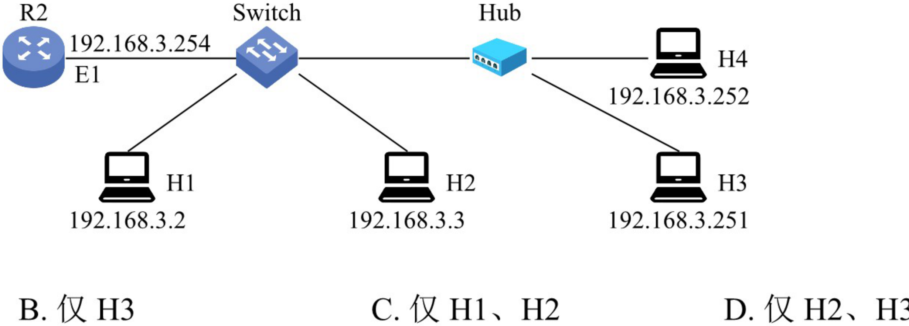

第3章 习题
题目取自王道《选择题做题本》《综合题做题本》· 选择题答案经答案速查逐题核对
先自己做完再展开答案；错题重点看解析中的排除思路。3.4 节滑动窗口与信道利用率计算题多，务必动手算完每一步再看解答；记住三个结论：GBN 发送窗口 \(W_T \leq 2^n-1\)、SR 接收窗口 \(W_R \leq 2^{n-1}\)、停止-等待利用率 \(U = \frac{L/C}{L/C + \mathrm{RTT} + T_{ack}}\)。
一、选择题 · 3.1 数据链路层的功能（第 1～6 题）
第 1 题单选
下列选项中，不属于数据链路层功能的是（ ）
- A. 帧定界
- B. 电路管理
- C. 差错控制
- D. 流量控制
答案与解析
答案：B
解析：数据链路层的主要功能包括：如何将二进制比特流组织成数据链路层的帧；如何控制帧在物理信道上的传输，包括如何处理传输差错；在两个网络实体之间提供数据链路的建立、维护和释放；控制链路上帧的传输速率，以使接收方有足够的缓存来接收每个帧。这些功能对应为帧定界、差错检测、链路管理和流量控制。电路管理功能由物理层提供，不属于数据链路层。
第 2 题单选
下列选项中，不属于数据链路层功能的是（ ）
- A. 透明传输
- B. 差错检测
- C. 可靠传输
- D. 拥塞控制
答案与解析
答案：D
解析：拥塞控制是网络层或传输层的功能，用于防止过多的分组注入网络而导致网络性能下降，数据链路层只负责相邻节点间的传输，不关注网络整体的拥塞状况。透明传输、差错检测、可靠传输均是数据链路层的功能。
第 3 题单选
下列选项中，不属于数据链路层协议功能的是（ ）
- A. 定义数据格式
- B. 提供节点之间的可靠传输
- C. 控制对物理传输介质的访问
- D. 为终端节点隐藏物理传输的细节
答案与解析
答案：D
解析：数据链路层的主要功能包括组帧，组帧即定义数据格式，选项 A 正确。数据链路层在物理层提供的不可靠的物理连接上实现节点到节点的可靠性传输，选项 B 正确。控制对物理传输介质的访问由数据链路层的介质访问控制（MAC）子层完成，选项 C 正确。为终端节点隐藏物理传输的细节是物理层的功能，数据链路层不必考虑如何实现无差别的比特传输，选项 D 错误。
第 4 题单选
为了避免传输过程中帧的丢失，数据链路层采用的方法是（ ）
- A. 帧编号机制
- B. 循环冗余检验码
- C. 海明码
- D. 计时器超时重发
答案与解析
答案：D
解析：为防止在传输过程中丢失帧，在可靠的数据链路层协议中，发送方为发送的每个数据帧设计一个计时器，当计时器到期而该帧的确认帧仍未到达时，发送方将重发该帧，即计时器超时重发。为保证接收方不会接收到重复帧，还需要对每个发送的帧进行编号；海明码和循环冗余检验码都只用于差错控制，解决不了"帧丢失"问题。
第 5 题单选
对于信道比较可靠且对实时性要求高的网络，数据链路层采用（ ）比较合适。
- A. 无确认的无连接服务
- B. 有确认的无连接服务
- C. 无确认的面向连接服务
- D. 有确认的面向连接服务
答案与解析
答案：A
解析：无确认的无连接服务是指源主机发送帧时不需要先建立逻辑连接，目的主机收到时也不需要发回确认。若线路上有噪声而造成某一帧丢失，则数据链路层并不检测这样的丢帧现象，也不回复。当错误率很低时，这类服务非常合适，此时恢复任务可由上面的高层负责；这类服务对实时通信也非常合适，因为实时通信中数据迟到比数据损坏更不好。
第 6 题单选
流量控制实际上是对（ ）的控制。
- A. 发送方的数据流量
- B. 接收方的数据流量
- C. 发送、接收方的数据流量
- D. 链路上任意两结点间的数据流量
答案与解析
答案：A
解析：流量控制是通过限制发送方的数据流量而使发送方的发送速率不超过接收方接收速率的一种技术，即控制的对象是发送方。接收方是流量控制的受益方，其速率不需要被控制。
选择题 · 3.2 组帧（第 7 题）
第 7 题单选 · 2013 统考真题
HDLC 协议对 01111100 01111110 组帧后，对应的比特串为（ ）（注：HDLC 协议已从最新大纲中删除）
- A. 01111100 00111110 10
- B. 01111100 01111101 01111110
- C. 01111100 01111101 0
- D. 01111100 01111110 01111101
答案与解析
答案：A
解析：HDLC 协议对比特串组帧时，HDLC 数据帧以比特模式 01111110（0111 1110）标识每个帧的起始和结束，因此在帧数据中只要出现 5 个连续的位"1"，就在输出的位流中填充一个"0"（零比特填充法）。原数据 01111100 01111110 中，第二段出现 5 个连续的"1"（01111 1…），填充后变为 01111100 00111110 10，即在 5 个连续"1"后插入一个 0。因此组帧后的比特串为 01111100 00111110 10（下划线部分为新填充的 0），选项 A 正确。
选择题 · 3.3 差错控制（第 8～16 题）
第 8 题单选
下列有关数据链路层差错控制的叙述中，错误的是（ ）
- A. 数据链路层只能提供差错检测，而不提供对差错的纠正
- B. 奇偶检验码只能检测出错误而无法对其进行修正，也无法检测出双位错误
- C. CRC 检验码可以检测出所有的单比特错误
- D. 海明码可以纠正一位差错
答案与解析
答案：A
解析：链路层的差错控制有两种基本策略：检错编码和纠错编码。常见的纠错编码有海明码，它可以纠正一位差错，因此说数据链路层"只能检测、不能纠正"是错误的，A 当选。奇偶检验码只能检出奇数个比特错、无法定位修正，也无法检出双位（偶数个）错误，B 正确；CRC 检验编码可以检测出所有的单比特错误（记住该结论即可），C 正确；海明码可纠正一位差错，D 正确。
第 9 题单选
下列关于奇偶检验码特征的描述中，正确的是（ ）
- A. 只能检查出奇数个比特错误
- B. 能检查出任意个比特的错误
- C. 比 CRC 检验更可靠
- D. 只能检查出偶数个比特的错误
答案与解析
答案：A
解析：奇偶检验的原理是通过增加冗余位来使得码字中"1"的个数保持为奇数或偶数的编码方法，它只能检查出奇数个比特的错误——因为偶数个比特同时出错时"1"的奇偶性不变，检验失效。CRC 的检错能力远强于奇偶检验，C 错误。
第 10 题单选
字符 S 的 ASCII 编码从低到高依次为 1100101，采用奇检验，在下述收到的传输后字符中，错误（ ）不能检测。
- A. 11000011
- B. 11001010
- C. 11001100
- D. 11010011
答案与解析
答案：D
解析：字符 S 的编码 1100101 中"1"的个数为 4（偶数），采用奇检验时检验位补 1，使整个码字（含检验位共 8 位）中"1"的个数为奇数。接收方校验时统计每个选项 8 位中"1"的个数：
A. 11000011 有 4 个 1（偶）→ 可检出；B. 11001010 有 4 个 1（偶）→ 可检出；C. 11001100 有 4 个 1（偶）→ 可检出；D. 11010011 有 5 个 1（奇）→ 检验通过，错误不能被检测。
既然采用奇检验，那么传输的数据中 1 的个数若是偶数则可检测出错误，若 1 的个数是奇数则检测不出错误，故选 D。
第 11 题单选
为纠正 2 比特错误，编码的码距至少应为（ ）
- A. 2
- B. 3
- C. 4
- D. 5
答案与解析
答案：D
解析：要纠正 \(d\) 位错误，编码的码距 \(l\) 需满足 \(l \geq 2d + 1\)。当 \(d = 2\) 时，所需码距为 \(2 \times 2 + 1 = 5\)。也可由码距关系式 \(l = d_{检} + c_{纠} + 1\)（且检错位数 \(d_{检} \geq\) 纠错位数 \(c_{纠}\)）理解：只纠错不检错时 \(l = 2c + 1 = 5\)。
第 12 题单选
对于 10 位要传输的数据，若采用海明校验，则需要增加的冗余信息位数是（ ）
- A. 3
- B. 4
- C. 5
- D. 6
答案与解析
答案：B
解析：在 \(k\) 比特信息位上附加 \(r\) 比特冗余信息，构成 \(k+r\) 比特的码字，必须满足 \(2^r \geq k + r + 1\)。这里 \(k = 10\)：\(r = 3\) 时 \(8 < 14\) 不满足；\(r = 4\) 时 \(16 \geq 10 + 4 + 1 = 15\) 满足。一般地，若 \(k\) 的取值小于等于 11 且大于 4，则 \(r = 4\)，故选 B。
第 13 题单选
下列关于循环冗余检验的说法中，错误的是（ ）
- A. 带 \(r\) 个检验位的多项式编码可以检测到所有长度小于或等于 \(r\) 的突发性错误
- B. 通信双方可以无须商定就直接使用多项式编码
- C. CRC 检验可以使用硬件来完成
- D. 有一些特殊的多项式，因为其有很好的特性，而成了国际标准
答案与解析
答案：B
解析：在使用多项式编码时，发送方和接收方必须预先商定一个生成多项式——发送方按照模 2 除法，得到检验码，在发送数据时将该检验码加到数据后面；接收方收到数据后，也需要根据该生成多项式来验证数据的正确性，双方不可能无须商定就直接使用，B 错误当选。选项 A 是正确结论（了解即可，无须掌握证明过程）；CRC 既可软件实现也可用硬件完成，C 正确；确实有一些特性优良的特殊多项式成了国际标准（如 CRC-CCITT），D 正确。
第 14 题单选
要发送的数据是 1101 0110 11，采用 CRC 检验，生成多项式是 10011，那么最终发送的数据应是（ ）
- A. 1101 0110 1110 10
- B. 1101 0110 1101 10
- C. 1101 0110 1111 10
- D. 1111 0011 0111 00
答案与解析
答案：C
解析：假设一个帧有 \(m\) 位，其对应的多项式为 \(G(x)\)，则计算冗余码的步骤如下：
① 加 0。假设 \(G(x)\) 的阶为 \(r\)，在帧的低 位端加上 \(r\) 个 0。生成多项式 10011 共 5 位，阶 \(r = 4\)，故在被除数 1101011011 后添 4 个 0，得 11010110110000。
② 模 2 除。利用模 2 除法，用 \(G(x)\) 对应的数据串除①中计算出的数据串，得到的余数即为冗余码（共 \(r\) 位，前面的 0 不可省略）。对 11010110110000 模 2 除 10011，得余数 1110。
多项式以 2 为模运算：按模 2 运算规则，加法不进位，减法不借位，它刚好是异或操作。
最终发送的数据 = 原数据 + 冗余码 = 1101 0110 11 1110，即 1101 0110 1111 10，选 C。
第 15 题单选 · 2023 统考真题
若甲向乙发送数据时采用 CRC 检验，生成多项式为 \(G(X) = X^4 + X + 1\)（\(G = 10011\)），则乙方接收到比特串（ ）时，可以断定其在传输过程中未发生错误。
- A. 10111 0000
- B. 10111 0100
- C. 10111 1000
- D. 10111 1100
答案与解析
答案：D
解析：观察选项：除后 4 位外，前 5 位都为 10111，可知发送方发送的数据部分为 10111，检验序列共 4 位（\(G(X) = X^4 + X + 1\) 的阶为 4）。在数据 10111 后面加 4 个 0，得 101110000，用生成多项式 10011 对其做模 2 除法：商为 10100，余数为 1100，因此发送方发送的帧串为 10111 1100。乙方收到 10111 1100 后用 10011 做模 2 除法余数为 0，可断定传输过程中未发生错误，选 D。（其余三个选项的后 4 位与 1100 不符，除之余数非 0，必出错。）
第 16 题单选 · 2025 统考真题
某差错编码的编码集为 {1001 1010, 0101 1100, 1111 0000, 0000 1111}，该差错编码的检错和纠错能力是（ ）
- A. 不超过 2 位错的 100% 检错、不超过 1 位错的纠错
- B. 不超过 2 位错的 100% 检错、不超过 2 位错的纠错
- C. 不超过 3 位错的 100% 检错、不超过 1 位错的纠错
- D. 不超过 3 位错的 100% 检错、不超过 2 位错的纠错
答案与解析
答案：C
解析：首先计算该编码集的码距：码距指两个码字在对应位上取值不同的比特数量，计算方法是对两个位串进行异或（xor）运算，结果中 1 的个数即为码距；编码集的码距取任意两个有效码字之间码距的最小值。对四个码字两两比较，任意两个码字的码距至少为 4，故该编码集的码距 \(d_{\min} = 4\)。根据差错控制理论，若编码集的码距为 \(d\)，则可检测不超过 \(d - 1\) 位错误，能纠正不超过 \(\lfloor (d-1)/2 \rfloor\) 位错误。因此该编码集最多能检测 3 位错误、纠正 1 位错误，选 C。
选择题 · 3.4 流量控制与可靠传输机制（第 17～47 题）
第 17 题单选
下列关于停止-等待协议的叙述中，正确的是（ ）
- A. 发送窗口和接收窗口的尺寸都为 1
- B. 最大的信道利用率有可能达到 100%
- C. 适合于往返时间比较长的信道
- D. 接收方可以不按序接收
答案与解析
答案：A
解析：停止-等待协议采用 1 比特给数据帧编号，发送窗口和接收窗口的尺寸都为 1，选项 A 正确。仅在收到当前窗口内的数据帧后，接收窗口才能向前移动，因此一定是按序接收的，D 错误。停止-等待协议的信道利用率 = 一个数据帧的发送时延 ÷（一个数据帧的发送时延 + RTT + 一个确认帧的发送时延），其中分子一定是小于分母的，所以信道利用率不可能达到 100%，B 错误；当 RTT 较大时，会降低信道利用率，因此停止-等待协议适合 RTT 较小（往返时间短）的信道，C 错误。
第 18 题单选
下列情况中，会使停止-等待协议的效率变得很低的是（ ）
- A. 当源主机和目的主机之间的距离很近而且数据传输速率很高时
- B. 当源主机和目的主机之间的距离很远而且数据传输速率很高时
- C. 当源主机和目的主机之间的距离很近而且数据传输速率很低时
- D. 当源主机和目的主机之间的距离很远而且数据传输速率很低时
答案与解析
答案：B
解析：根据信道利用率的计算公式 \(U = \frac{L/C}{L/C + \mathrm{RTT} + T_{ack}}\)，当数据传输速率很高时，数据帧的发送时间 \(L/C\) 很短（分子变小）；当源主机和目的主机的距离很远时，往返时延 RTT 很大（分母变大），此时的信道利用率很低。两者同时出现时效率最低，故选 B。
第 19 题单选
在简单的停止-等待协议中，当帧出现丢失时，发送方会永远等待下去，解决这种死锁现象的办法是（ ）
- A. 差错检验
- B. 帧序号
- C. NAK 机制
- D. 超时机制
答案与解析
答案：D
解析：在停止-等待协议中，发送方设置了计时器，在发送一个帧后，发送方等待确认，若在计时器计满时仍未收到确认，则再次发送相同的帧，以免陷入永久的等待——即超时重传机制解决了帧丢失导致的死锁。帧序号用于解决重复帧问题，差错检验用于检出比特错误，均不解决"永远等待"问题。
第 20 题单选
在停止-等待协议中，为了让接收方能判断所收到的数据帧是否重复，采用（ ）的方法。
- A. 帧编号
- B. 检错码
- C. 重传计时器
- D. NAK 帧
答案与解析
答案：A
解析：在停止-等待协议中，使用 1 位来编号即可。若连续出现相同序号的数据帧，则表明发送方进行了超时重传；若连续出现相同序号的确认帧，则表明接收方收到了重复帧。检错码只能发现比特错误，计时器只负责触发重传，都不能识别重复帧。
第 21 题单选
一个信道的数据传输速率为 4kb/s，单向传播时延为 30ms，若使停止-等待协议的信道最大利用率达到 80%，那么要求的数据帧长至少为（ ）
- A. 160 比特
- B. 320 比特
- C. 560 比特
- D. 960 比特
答案与解析
答案：D
解析：设 \(C\) 为数据传输速率，\(L\) 为帧长，\(R\) 为单程传播时延。停止-等待协议的信道最大利用率为
\(U = \dfrac{L/C}{L/C + 2R} = \dfrac{L}{L + 2RC} = \dfrac{L}{L + 2 \times 30\text{ms} \times 4\text{kb/s}} = 80\%\)
即 \(L = 0.8(L + 240) \Rightarrow 0.2L = 192 \Rightarrow L = 960\text{bit}\)，故数据帧长至少为 960 比特。
第 22 题单选
主机甲采用停止-等待协议向主机乙发送数据，数据传输速率是 6kb/s，单向传播时延是 100ms，忽略确认帧的发送时延。若信道的利用率为 40%，则数据帧的长度为（ ）
- A. 240 比特
- B. 320 比特
- C. 600 比特
- D. 800 比特
答案与解析
答案：D
解析：本题忽略确认帧的发送时延，所以信道利用率 = 数据帧的发送时延 /（数据帧的发送时延 + 往返时延）= 0.4。设发送时延为 \(T_d\)，则 \(T_d/(T_d + 200\text{ms}) = 0.4\)，解得数据帧的发送时延 \(T_d = 4/30\text{s}\)。所以数据帧的长度为 \(6\text{kb/s} \times 4/30\text{s} = 800\text{bit}\)。
第 23 题单选
在停止-等待协议中，若发送方发送的数据帧中途丢失，则可能发生的情况是（ ）
- A. 接收方发送 NAK 帧，请求重发此帧
- B. 发送方在经过超时时间后未收到 ACK 帧，自动重发此帧
- C. 接收方在经过超时时间后，向发送方发送 ACK 帧，请求重发此帧
- D. 发送方继续发送后续帧，直到经过超时时间后未收到 ACK 帧，重发此帧
答案与解析
答案：B
解析：停止-等待协议使用确认和重传机制，发送方每发送一个帧，就要停下来等待接收方发回的确认帧，收到确认帧后才能发送下一帧。帧在途中丢失时接收方根本收不到任何数据，因此不会发送 NAK 或 ACK；发送方经过超时时间后未收到 ACK 帧，则自动重传此帧，B 正确。停止-等待协议发送窗口为 1，发送方不可能"继续发送后续帧"，D 错误。
第 24 题单选
下列关于连续 ARQ 的说法中，错误的是（ ）
- A. 发送方可以连续发送若干数据帧，而不是发完一个数据帧就停下来等待确认帧
- B. 发送方收到了接收方发来的确认帧，还可以接着发送数据帧
- C. 相比停止-等待协议，连续 ARQ 因为减少了等待时间，所以提高了信道利用率
- D. 接收方可以不按序接收数据帧
答案与解析
答案：D
解析：连续 ARQ 协议分为 GBN 协议和 SR 协议。SR 的接收窗口大于 1，接收方可以先收下失序但仍落在接收窗口内的那些数据帧；但 GBN 的接收窗口等于 1，接收方必须按序接收数据帧，因此"接收方可以不按序接收"的说法对连续 ARQ 不成立，D 错误当选。A、B、C 均为连续 ARQ 的正确特征：连续发送减少了等待时间，提高了信道利用率。
第 25 题单选
数据链路层采用后退 N 帧协议进行流量控制，发送方已发送编号为 0～6 的帧，之后收到 5 号数据帧的确认，发送方的滑动窗口向后移动后，发送方可发送的数据帧数量为 6 个，假设整个过程未发生超时，则应采用（ ）位给数据帧编号。
- A. 3
- B. 4
- C. 5
- D. 6
答案与解析
答案：A
解析：发送方收到 5 号帧的确认后（GBN 采用累积确认），表示 5 号帧及之前的所有帧都被接收方正确接收，因此滑动窗口右移后，新窗口内的第一个帧就是 6 号帧；又因为此时可发送的数据帧数为 6，因此发送窗口的总大小为 7。在 GBN 协议中，若采用 \(n\) 位给帧编号，则发送窗口大小 \(W_T \leq 2^n - 1\)，由 \(2^n - 1 \geq 7\) 得 \(n = 3\)，故选 A。
第 26 题单选
数据链路层采用后退 N 帧协议，发送方已经发送了编号从 0 到 6 的帧。当计时器超时的时候，只收到对 1、2、4 号帧的确认，发送方需要重传的帧的数量是（ ）
- A. 1
- B. 2
- C. 5
- D. 6
答案与解析
答案：B
解析：后退 N 帧协议采用累积确认，收到对 4 号帧的确认即表示 4 号帧及 4 号帧之前的数据帧都已被正确接收，所以只需重传 5 号帧和 6 号帧这两个数据帧，数量为 2，选 B。（"只收到 1、2、4 号帧的确认"中的个别确认帧丢失并不影响，因为累积确认，不代表 3 号帧未到达接收方。）
第 27 题单选
数据链路层采用了后退 N 帧协议 (GBN)，若发送窗口的大小是 32，则至少需要（ ）位的序列号才能保证协议不出错。
- A. 4
- B. 5
- C. 6
- D. 7
答案与解析
答案：C
解析：对于滑动窗口协议，序列号个数要大于或等于窗口数（发送窗口大小 + 接收窗口大小），所以在后退 N 帧的协议中，序列号个数不小于"发送窗口大小 + 1"。题中发送窗口大小是 32，那么序列号个数最少应该是 33 个，而 \(2^5 = 32 < 33 \leq 2^6 = 64\)，所以最少需要 6 位的序列号才能达到要求，选 C。
第 28 题单选
若采用后退 N 帧的 ARQ 协议进行流量控制，帧编号字段为 7 位，则发送窗口的最大长度为（ ）
- A. 7
- B. 8
- C. 127
- D. 128
答案与解析
答案：C
解析：若发送窗口过大，接收窗口整体向前移动时，新窗口中的序列号和旧窗口的序列号产生重叠，致使接收方无法区别发送方发送的帧是重传帧还是新帧，因此在后退 N 帧的 ARQ 协议中，发送窗口 \(W_T \leq 2^n - 1\)。本题中 \(n = 7\)，因此发送窗口的最大长度是 \(2^7 - 1 = 127\)，选 C。
第 29 题单选
一个使用选择重传协议的数据链路层，若采用了 5 位的帧序列号，则可以选用的最大接收窗口是（ ）
- A. 15
- B. 16
- C. 31
- D. 32
答案与解析
答案：B
解析：在选择重传协议中，若用 \(n\) 比特对帧编号，则发送窗口和接收窗口的大小关系为 \(1 < W_R \leq W_T\)，还需满足 \(W_R + W_T \leq 2^n\)，所以接收窗口的最大尺寸不超过序号范围的一半，即 \(W_R \leq 2^{n-1} = 2^4 = 16\)，选 B。
第 30 题单选
对于窗口总大小为 \(n\) 的滑动窗口，最多可以有（ ）帧已发送但没有确认。
- A. 0
- B. \(n-1\)
- C. \(n\)
- D. \(n/2\)
答案与解析
答案：B
解析：在连续 ARQ 协议中，发送窗口大小 ≤ 窗口总数 − 1。例如，窗口总数为 8，编号为 0～7，假设这 8 个帧都已发出，下一轮又发出编号 0～7 的 8 个帧，接收方将无法判断第二轮发的 8 个帧到底是重传帧还是新帧，因为它们的序号完全相同。另一方面，对于后退 N 帧协议，发送窗口大小可以等于窗口总数 − 1，因为它的接收窗口大小为 1，所有的帧保证按序接收。因此对于窗口大小为 \(n\) 的滑动窗口，其发送窗口大小最大为 \(n - 1\)，即最多可以有 \(n-1\) 帧已发送但没有确认。
第 31 题单选
数据链路层采用选择重传协议 (SR) 传输数据，若帧序号采用 4 比特编号，接收窗口大小为 7，则发送窗口最大是（ ）
- A. 17
- B. 8
- C. 9
- D. 10
答案与解析
答案：C
解析：在选择重传协议中，若用 \(n\) 比特对帧编号，则发送窗口和接收窗口的大小关系为 \(1 < W_R \leq W_T\)，此外还要满足 \(W_R + W_T \leq 2^n\)。因此发送窗口的最大尺寸为 \(2^4 - 7 = 16 - 7 = 9\)，选 C。
第 32 题单选
对无序接收的滑动窗口协议，若序号位数为 \(n\)，则接收窗口最大尺寸为（ ）
- A. \(2^n - 1\)
- B. \(2n\)
- C. \(2n - 1\)
- D. \(2^{n-1}\)
答案与解析
答案：D
解析：本题未直接告知使用的是选择重传协议，而是通过间接方式给出的。题目称"无序接收的滑动窗口协议"，表示接收窗口大于 1，所以使用的是选择重传协议，接收窗口最大尺寸为 \(2^{n-1}\)（由 \(W_R + W_T \leq 2^n\) 且 \(W_R \leq W_T\) 推得），选 D。
第 33 题单选
采用滑动窗口机制对两个相邻节点 A 和 B 的通信过程进行流量控制。A 和 B 之间的数据传输速率为 20kb/s，数据帧和确认帧的长度都为 2000B，往返传播时延为 1400ms，采用 3 比特给数据帧编号，测得在 A 和 B 的通信过程中信道利用率大于 80%，则（ ）（注：在 SR 协议中，默认发送窗口大小等于接收窗口大小）
- A. 节点 A、B 之间只能采用停止-等待协议
- B. 节点 A、B 之间只能采用 GBN 协议
- C. 节点 A、B 之间只能采用 SR 协议
- D. 节点 A、B 之间可以采用 GBN 协议或 SR 协议
答案与解析
答案：D
解析：无论采用哪种滑动窗口协议，信道利用率的计算方法都是：发送窗口内所有数据帧的发送时延 /（一个数据帧的发送时延 + RTT + 一个确认帧的发送时延）。分母记为 \(T\) = 一个数据帧的发送时延 + RTT + 一个确认帧的发送时延，其中数据帧或确认帧的发送时延 = 2000B ÷ 20kb/s = 800ms，RTT = 1400ms，即 \(T = 800 + 800 + 1400 = 3000\text{ms}\)。假设发送窗口大小为 \(x\)，则 800x/3000 > 0.8，即发送窗口大小 \(x\) 要大于 3。GBN 协议的发送窗口为 \(2^3 - 1 = 7\)，满足要求；SR 协议的发送窗口为 \(2^2 = 4\)，也满足要求。因此 A 和 B 之间可以采用 GBN 协议或 SR 协议，选 D。
第 34 题单选
流量控制是实现发送方和接收方速度一致的机制，实现这种机制所采取的措施是（ ）
- A. 增大接收方接收速度
- B. 减小发送方发送速度
- C. 接收方向发送方反馈信息
- D. 增加双方的缓冲区
答案与解析
答案：C
解析：实现流量控制的常用方法是滑动窗口协议，它让接收方把自己的接收窗口大小反馈给发送方，以调节发送方的发送窗口大小，避免发送方因发送速度过快而导致接收方来不及接收。流量控制的核心措施是接收方向发送方反馈信息，选 C。
第 35 题单选
假设两台主机之间采用后退 N 帧协议传输数据，数据传输速率为 16kb/s，单向传播时延为 250ms，数据帧的长度是 128B，确认帧的长度也是 128B，为使信道利用率达到最高，则帧序号的比特数至少为（ ）
- A. 2
- B. 3
- C. 4
- D. 5
答案与解析
答案：C
解析：为使信道利用率最高（100%），要让发送方在一个发送周期内持续发送帧，不能出现发送窗口内的帧发送完但还未收到第一帧的确认帧的情况。发送周期 = 发送一个数据帧的时间 + 往返时延 + 发送一个确认帧的时间，发送一个数据帧或确认帧的时间均为 128B ÷ 16kb/s = 64ms，发送周期 = 64ms + 250ms × 2 + 64ms = 628ms。为保证发送方持续发送帧，在一个发送周期内至少要发送的帧数为 628ms ÷ 64ms ≈ 10，即发送窗口大小至少为 10，所以帧序号至少采用满足 \(2^n - 1 \geq 10\) 的比特数，即 4 比特，选 C。
第 36 题单选
在下列滑动窗口机制中，理论上可以达到 100% 信道利用率的是（ ）
Ⅰ. 停止-等待协议 Ⅱ. 后退 N 帧协议 Ⅲ. 选择重传协议
- A. Ⅰ
- B. Ⅱ
- C. Ⅲ
- D. Ⅱ 和 Ⅲ
答案与解析
答案：D
解析：信道利用率 = 发送周期内用于发送数据帧的时间 / 发送周期，其中发送周期 = 发送一个数据帧的时间 + 往返时延 + 发送一个确认帧的时间。停止-等待协议的发送窗口为 1，一个周期内只能发一帧，分子恒小于分母，不可能达到 100% 的信道利用率；只要发送窗口足够大，后退 N 帧协议和选择重传协议都有可能在一个发送周期内持续发送帧，达到 100% 的信道利用率，选 D。
第 37 题单选
数据链路层采用选择重传协议进行流量控制，发送方在收到 0～3 号帧的确认后，又收到了 5 号帧的确认，发送窗口内还有其他帧未发送，且未发生超时，则发送方将（ ）
- A. 重传 4 号帧
- B. 重传 5 号帧
- C. 接收该确认帧并继续发送剩下的帧
- D. 停止发送并等待超时
答案与解析
答案：C
解析：在选择重传协议中，接收方对正确收到的每个数据帧单独进行确认，不要求收到的数据帧是有序的。依题意，接收方已正确收到 0～3 号和 5 号数据帧，但不确定 4 号数据帧是否收到。因为没有发生超时，发送方不进行重传，所以接收该确认帧并继续发送剩下的数据帧，选 C。（若 4 号帧确实丢失，稍后也会由 4 号帧自身的超时计时器触发单独重传。）
第 38 题单选 · 2009 统考真题
数据链路层采用了后退 N 帧 (GBN) 协议，发送方已经发送了编号为 0～7 的帧。当计时器超时的时候，若发送方只收到 0、2、3 号帧的确认，则发送方需要重发的帧数是（ ）
- A. 2
- B. 3
- C. 4
- D. 5
答案与解析
答案：C
解析：在 GBN 协议中，当接收方检测到某帧出错时，会简单地丢弃该帧及所有的后续帧，发送方超时后需重传该数据帧及所有的后续帧。注意，在 GBN 协议中，接收方一般采用累积确认的方式，即接收方对按序到达的最后一个分组发送确认，因此本题中收到 3 号帧的确认就表示编号为 0、1、2、3 的帧已接收，而此时发送方未收到 1 号帧的确认只能代表确认帧在返回的过程中丢失，而不代表 1 号帧未到达接收方。因此需要重发的帧为编号 4、5、6、7 的帧，共 4 帧，选 C。
第 39 题单选 · 2011 统考真题
数据链路层采用选择重传协议 (SR) 传输数据，发送方已发送 0～3 号数据帧，现已收到 1 号帧的确认，而 0、2 号帧依次超时，则此时需要重传的帧数是（ ）
- A. 1
- B. 2
- C. 3
- D. 4
答案与解析
答案：B
解析：在选择重传协议中，接收方逐个确认正确接收的分组，不管接收到的分组是否有序，只要正确接收就发送选择 ACK 分组进行确认，因此 ACK 分组不再具有累积确认的作用——对于这一点，要特别注意与 GBN 协议的区别。此题中只收到 1 号帧的确认，0、2 号帧超时，因为对 1 号帧的确认不具有累积确认的作用，所以发送方认为接收方未收到 0、2 号帧，于是重传这两帧，共 2 帧，选 B。
第 40 题单选 · 2012 统考真题
两台主机之间的数据链路层采用后退 N 帧协议 (GBN) 传输数据，数据传输速率为 16kb/s，单向传播时延为 270ms，数据帧长度范围是 128～512 字节，接收方总是以与数据帧等长的帧进行确认。为使信道利用率达到最高，帧序号的比特数至少为（ ）
- A. 5
- B. 4
- C. 3
- D. 2
答案与解析
答案：B
解析：连续 ARQ 的信道利用率：
$$U = \frac{\text{发送窗口大小} \times \text{数据帧长} / \text{数据传输速率}}{(\text{数据帧长} / \text{数据传输速率}) \times 2 + \text{RTT}} = \frac{\text{发送窗口大小} / \text{数据传输速率}}{2/\text{数据传输速率} + \text{RTT} / \text{数据帧长}}$$
从上述公式可知，数据帧长越大，信道利用率就越高。数据帧长是不确定的，范围为 128～512B，在计算最小窗口数时，为了保证无论数据帧长如何变化，信道利用率都能达到 100%，应以 128B 的帧长计算。因此，当最短的帧长都能达到 100% 的信道利用率时，发送更长的数据帧也都能达到 100% 的信道利用率（若以 512B 的帧长计算，则求得的最小窗口数在 128B 的帧长下达不到 100% 的信道利用率）。首先计算出发送一个帧的时间：128 × 8 ÷ (16 × 10³) = 64ms；发送一个帧到收到确认帧为止的总时间：64 + 270 × 2 + 64 = 668ms；这段时间总共可发送 668/64 = 10.4 帧，即发送窗口 ≥ 11，而 GBN 接收窗口 = 1，序列号个数需 ≥ 12，所以至少需要用 4 位比特进行编号，选 B。
第 41 题单选 · 2014 统考真题
主机甲与主机乙之间使用后退 N 帧协议 (GBN) 传输数据，主机甲的发送窗口尺寸为 1000，数据帧长为 1000 字节，信道带宽为 100Mb/s，主机乙每收到一个数据帧，就立即利用一个短帧（忽略其传输延迟）进行确认，若主机甲和主机乙之间的单向传播时延是 50ms，则主机甲可以达到的最大平均数据传输速率约为（ ）
- A. 10Mb/s
- B. 20Mb/s
- C. 80Mb/s
- D. 100Mb/s
答案与解析
答案：C
解析：考虑制约甲方的数据传输速率的因素。首先，信道带宽能直接制约数据的传输速率，传输速率一定是小于或等于信道带宽的。其次，因为甲方和乙方之间采用后退 N 帧协议传输数据，要考虑发送一个数据到接收到它的确认之前，最多能发送多少数据，甲方的最大传输速率受这两个条件的约束，所以甲方的最大传输速率是这两个值中的小者。甲方的发送窗口尺寸为 1000，即收到第一个数据的确认前，最多能发送 1000 个数据帧，即 1000 × 1000B = 1MB 的内容；而从发送第一个帧到接收到它的确认的时间是一个帧的发送时间加上往返时间，即 1000B ÷ 100Mb/s + 50ms + 50ms = 0.10008s，此时的最大传输速率为 1MB ÷ 0.10008s ≈ 10MB/s = 80Mb/s。信道带宽为 100Mb/s，因此答案为 min(80Mb/s, 100Mb/s) = 80Mb/s，选 C。
第 42 题单选 · 2015 统考真题
主机甲通过 128kb/s 卫星链路，采用滑动窗口协议向主机乙发送数据，链路单向传播时延为 250ms，帧长为 1000 字节。不考虑确认帧的开销，为使链路利用率不小于 80%，帧序号的比特数至少是（ ）
- A. 3
- B. 4
- C. 7
- D. 8
答案与解析
答案：B
解析：按发送周期思考，从开始发送帧到收到第一个确认帧为止，用时为 \(T\) = 第一个帧的发送时延 + 第一个帧的传播时延 + 确认帧的发送时延 + 确认帧的传播时延，这里忽略确认帧的发送时延。因此 \(T = 1000\text{B} \div 128\text{kb/s} + \text{RTT} = 0.5625\text{s}\)。接着计算在 \(T\) 内需要发送多少数据才能满足利用率不小于 80%：设数据大小为 \(L\) 字节，则 \((L \div 128\text{kb/s}) / T \geq 0.8\)，得到 \(L \geq 7200\text{B}\)，即在一个发送周期内至少要发 7.2 个帧才能满足要求。设需要编号的比特数为 \(n\)，则滑动窗口（本题按连续 ARQ 最大窗口 \(2^n - 1\) 考虑）需 \(2^n - 1 \geq 7.2\)，\(n\) 至少为 4，选 B。
第 43 题单选 · 2018 统考真题
主机甲采用停止-等待协议向主机乙发送数据，数据传输速率是 3kb/s，单向传播时延是 200ms，忽略确认帧的传输时延。当信道利用率等于 40% 时，数据帧的长度为（ ）
- A. 240 比特
- B. 400 比特
- C. 480 比特
- D. 800 比特
答案与解析
答案：D
解析：信道利用率 = 传输帧的有效时间 / 传输帧的周期。假设帧的长度为 \(x\) 比特。对于有效时间，应该用帧的大小除以数据传输速率，即 \(x \div 3\text{kb/s}\)。对于帧的传输周期，应包含 4 部分：帧在发送方的发送时延、帧从发送方到接收方的单程传播时延、确认帧在接收方的发送时延、确认帧从接收方到发送方的单程传播时延。这 4 个时延中，因为题目中说"忽略确认帧的传输时延"，所以不计算确认帧的传输时延（传输时延也称发送时延，注意与传播时延区分）。所以帧的传输周期由三部分组成：首先是帧在发送方的发送时延 \(x \div 3\text{kb/s}\)，其次是帧从发送方到接收方的单程传播时延 200ms，最后是确认帧从接收方到发送方的单程传播时延 200ms，三相加得周期为 \(x \div 3\text{kb/s} + 400\text{ms}\)。代入信道利用率的公式：\(\frac{x/3000}{x/3000 + 0.4} = 0.4\)，解得 \(x = 800\text{bit}\)，选 D。
第 44 题单选 · 2019 统考真题
对于滑动窗口协议，若分组序号采用 3 比特编号，发送窗口大小为 5，则接收窗口最大是（ ）
- A. 2
- B. 3
- C. 4
- D. 5
答案与解析
答案：B
解析：从滑动窗口的概念来看：停止-等待协议，发送窗口大小 = 1，接收窗口大小 = 1；后退 N 帧协议，发送窗口大小 > 1，接收窗口大小 = 1；选择重传协议，发送窗口大小 > 1，接收窗口大小 > 1。在选择重传协议中，还需满足：接收窗口大小 ≤ 发送窗口大小；发送窗口大小 + 接收窗口大小 ≤ \(2^n\)。根据以上规则，采用 3 比特编号，发送窗口大小为 5，接收窗口大小 ≤ \(2^3 - 5 = 3\)，选 B。
第 45 题单选 · 2020 统考真题
假设主机甲采用停止-等待协议向主机乙发送数据帧，数据帧长与确认帧长均为 1000B，数据传输速率是 10kb/s，单程传播延时是 200ms。则主机甲的最大信道利用率为（ ）
- A. 80%
- B. 66.7%
- C. 44.4%
- D. 40%
答案与解析
答案：D
解析：发送数据帧和确认帧的时间均为 \(t = 1000 \times 8\text{b} \div 10\text{kb/s} = 800\text{ms}\)。
发送周期为 \(T = 800\text{ms} + 200\text{ms} + 800\text{ms} + 200\text{ms} = 2000\text{ms}\)（数据帧发送时延 + 数据帧传播时延 + 确认帧发送时延 + 确认帧传播时延）。
信道利用率为 \(t/T \times 100\% = 800/2000 = 40\%\)，选 D。
第 46 题单选 · 2023 统考真题
假设通过同一条信道，数据链路层分别采用停止-等待协议、GBN 协议和 SR 协议（发送窗口和接收窗口相等）传输数据，三个协议的数据帧长相同，忽略确认帧长，帧序号位数为 3 比特。若对应三个协议的发送方最大信道利用率分别是 \(U_1\)、\(U_2\) 和 \(U_3\)，则 \(U_1\)、\(U_2\) 和 \(U_3\) 满足的关系是（ ）
- A. \(U_1 \leq U_2 \leq U_3\)
- B. \(U_1 \leq U_3 \leq U_2\)
- C. \(U_2 \leq U_3 \leq U_1\)
- D. \(U_3 \leq U_2 \leq U_1\)
答案与解析
答案：B
解析：信道利用率 \(U = nT_D/T\)，其中 \(n\) 是发送窗口的大小，\(T_D\) 是发送一个数据帧的时间，\(T\) 是一个数据帧的发送周期。在 \(T_D\) 和 \(T\) 确定的情况下，\(n\) 越大，信道利用率就越大。设帧序号的比特数为 \(k = 3\)，则停止-等待协议的发送窗口 \(W_{T1} = 1\)；GBN 协议的发送窗口 \(W_{T2} = 2^k - 1 = 7\)；SR 协议的发送窗口 \(W_{T3} \leq 2^{k-1} = 4\)（通常取 \(2^{k-1}\)）。因此 \(W_{T1} \leq W_{T3} \leq W_{T2}\)，故 \(U_1 \leq U_3 \leq U_2\)，选 B。
第 47 题单选 · 2024 统考真题
主机甲通过选择重传 (SR) 滑动窗口协议向主机乙发送帧的部分过程如下图所示，Fx 为数据帧，ACKx 为确认帧，\(x\) 是位数为 3 比特的序号。主机乙只对正确接收的数据帧进行独立确认，发送窗口与接收窗口大小相同且均为最大值。主机甲在 \(t_1\) 时刻和 \(t_2\) 时刻发送的数据帧分别是（ ）

- A. F1, F3
- B. F1, F4
- C. F3, F1
- D. F4, F1
答案与解析
答案：D
解析：数据帧编号的范围是 0～7，发送窗口与接收窗口大小相等且均为最大值，因此发送窗口大小 = 接收窗口大小 = \(2^{3-1} = 4\)。甲发送 F0、F1、F2 和 F3 四个数据帧后，收到 F0 的确认，因此在 \(t_1\) 时刻，发送窗口向右滑动，可以继续发送 F4；之后收到 F2 的确认，但由于 F1 丢失，甲无法收到 F1 的确认，发送窗口无法继续向右滑动，直到 \(t_2\) 时刻，F1 超时，重传 F1。因此 \(t_1\)、\(t_2\) 时刻发送的帧分别为 F4、F1，选 D。
二、综合题
综合题 13.2 组帧
在一个数据链路协议中使用下列字符编码：
A: 01000111 B: 11100011 ESC: 11100000 FLAG: 01111110
在使用下列成帧方法的情况下，说明为传送 4 个字符 A、B、ESC、FLAG 所组织的帧而实际发送的二进制位序列（使用 FLAG 作为首尾标志，ESC 作为转义字符）。
(1) 使用字符计数法。(2) 使用字符填充法。(3) 使用零比特填充法。
答案与解析
解答：
(1) 字符计数法：第一字节为所传输的字符计数 5（帧长度字段 + 4 个数据字符），转换为二进制为 00000101，后面依次为 A、B、ESC、FLAG 的二进制编码：
00000101 01000111 11100011 11100000 01111110
(2) 字符填充法：首尾标志位 FLAG（01111110），在所传输的数据中，若出现控制字符（FLAG 或 ESC 本身），则在该字符前插入转义字符 ESC（11100000）。数据中的 ESC 字符前要插入 ESC，FLAG 字符前也要插入 ESC：
01111110 01000111 11100011 11100000 11100000 11100000 01111110 01111110
(3) 零比特填充法：首尾标志位 FLAG（01111110），把 4 个字符连成位流后扫描，凡出现连续 5 个"1"，就在其后插入一个"0"（位流跨字符边界处也要一并考虑）：
· A|B 边界：A=01000111，B=11100011，相连处出现 6 个连续"1"（A 的后 3 个 + B 的前 3 个），在第 5 个"1"后插 0，该段变为 01000111 110100011；
· B|ESC 边界：B 的后 2 个"1"与 ESC 的前 3 个"1"构成 5 连"1"，插 0 后 ESC 段变为 111000000；
· FLAG 数据本身含 5 连"1"，插 0 后变为 011111010。
实际发送的二进制位序列为：
01111110 01000111 110100011 111000000 011111010 01111110
综合题 23.3 差错控制
在数据传输过程中，若接收方收到的二进制比特序列为 10110011010，接收双方采用的生成多项式为 \(G(x) = x^4 + x^3 + 1\)，则该二进制比特序列在传输中是否出错？如果未出错，则发送数据的比特序列和 CRC 检验码的比特序列分别是什么？
答案与解析
解答：根据题意，生成多项式 \(G(x) = x^4 + x^3 + 1\) 对应的比特序列为 11001。进行二进制模 2 除法，被除数为 10110011010，除数为 11001：
10110011010 ÷ 11001，商为 1101010，最终所得余数为 0，因此该比特序列在传输过程中未出现差错。
接收到的序列 = 发送数据 + CRC 检验码，CRC 检验码的位数等于生成多项式 \(G(x)\) 的最高次幂，即 4 位。因此：
发送数据的比特序列是 1011001（前 7 位），CRC 检验码的比特序列是 1010（后 4 位）。
综合题 33.4 流量控制与可靠传输机制
在选择重传协议中，设序号用 3 比特编号，发送窗口 \(W_T = 6\)，接收窗口 \(W_R = 3\)。试找出一种情况，使得在此情况下协议不能正确工作。
答案与解析
解答：对于选择重传协议，接收窗口和发送窗口的尺寸需满足：接收窗口尺寸 \(W_R\) + 发送窗口尺寸 \(W_T \leq 2^n\)，而题目中给出的数据是 \(W_R + W_T = 9 > 2^3 = 8\)，所以是无法正常工作的。举例说明：
发送方：0 1 2 3 4 5 6 7 0 1 2 3 4 5 6 7 0
接收方：0 1 2 3 4 5 6 7 0 1 2 3 4 5 6 7 0
发送方发送 0～5 号共 6 个数据帧时，因发送窗口已满，发送暂停。接收方收到所有数据帧，对每个帧都发送确认帧，并期待后面的 6、7、0 号帧。若所有的确认帧都未到达发送方，经过发送方计时器控制的超时时间后，发送方再次发送之前的 6 个数据帧，而接收方收到 0 号帧后，无法判断是新的数据帧还是重传的旧数据帧（新窗口与旧窗口的序号重叠），协议因此不能正确工作。
综合题 43.4 流量控制与可靠传输机制
假设一个信道的数据传输速率为 5kb/s，单向传输时延为 30ms，那么帧长在什么范围内，才能使用于差错控制的停止-等待协议的效率至少为 50%？（忽略确认帧的发送时延）
答案与解析
解答：设数据帧长为 \(L\)。在停止-等待协议中，发送数据帧的时间为 \(L/B\)，发送完数据帧后等待确认的时间为 \(2R\)（往返传播时延）。要使协议的效率至少为 50%，要求信道利用率 \(U\) 至少为 50%，则
$$\text{信道利用率}\, U = \frac{\text{数据发送时延}}{\text{数据发送时延} + \text{往返时延}} = \frac{L/B}{L/B + 2R} \geq 50\%$$
解得 \(L \geq 2RB = 2 \times 5000 \times 0.03\text{bit} = 300\text{bit}\)。
结论：当帧长大于或等于 300bit 时，停止-等待协议的效率至少为 50%。
综合题 53.4 流量控制与可靠传输机制
假定信道的数据传输速率为 100kb/s，单程传播时延为 250ms，每个数据帧的长度均为 2000 位，且不考虑确认帧长、首部和处理时间等开销，为了达到最大的传输效率，试问帧的序号应为多少位？此时信道利用率是多少？
答案与解析
解答：RTT = 250 × 2 = 500ms = 0.5s。
一个帧的发送时间等于 2000bit ÷ 100kb/s = 20 × 10⁻³ s = 0.02s。
一个帧发送完后经过一个单程时延到达接收方，再经过一个单程时延发送方收到确认帧，从而可以继续发送，因此要使传输效率最大，就要让发送方继续地发送帧（一个发送周期内不停顿）。设发送窗口等于 \(x\)，则
$$0.02\text{s} \times x = 0.02\text{s} + \text{RTT} = 0.52\text{s}$$
解得 \(x = 26\)，即发送窗口取 26 即可。因为 16 < 26 < 32，所以帧序号应为 5 位。在使用连续 ARQ 的情况下，发送窗口的最大值是 31，大于 26，可以不间断地发送帧，此时信道利用率是 100%。
综合题 63.4 流量控制与可靠传输机制
在数据传输速率为 50kb/s 的卫星信道上传送长度为 1kbit 的帧，总是采用捎带确认，帧序号长度为 3bit，单向传播延迟为 270ms。对于下面三种协议，信道的最大利用率是多少？
(1) 停止-等待协议。(2) 后退 N 帧协议。(3) 选择重传协议（假设发送窗口和接收窗口相等）。
答案与解析
解答：最大信道利用率即每个传输周期内每个协议可发送的最大帧数占比。由题意，数据帧的长度为 1kbit，信道的数据传输速率为 50kb/s，因此信道的发送时延为 1/50 s = 0.02s，另外信道端到端的传播时延 = 0.27s。本题中的确认帧是捎带的（通过数据帧来传送），因此每个数据帧的传输周期为 (0.02 + 0.27 + 0.02 + 0.27) s = 0.58s。
(1) 停止-等待协议：发送方每发送一帧，都要等待接收方的应答信号，之后才能发送下一帧；接收方每接收一帧，都要反馈一个应答信号，表示可接收下一帧。其中用于发送数据帧的时间为 0.02s。因此，信道的最大利用率为 0.02/0.58 ≈ 3.4%。
(2) 后退 N 帧协议：接收窗口尺寸为 1，若采用 \(n\) 比特对帧编号，则其发送窗口的尺寸 \(W\) 满足 \(1 < W \leq 2^n - 1\)。发送方可以连续再发送若干数据帧，直到发送窗口内的数据帧都发送完毕。若收到接收方的确认帧，则可以继续发送；若某个帧出错，接收方只是简单地丢弃该帧及所有的后续帧，发送方超时后，需要重传该数据帧及所有的后续数据帧。根据题目条件，在达到最大传输速率的情况下，发送窗口的大小应为 \(2^n - 1 = 7\)，此时在第一帧的数据传输周期 0.58s 内，实际连续发送了 7 帧（考虑极限情况，0.58s 后接收方只收到 0 号帧的确认，此时又可以发出一个新帧，这样依次下去，取极限即是每个传输周期 0.58s 内发送了 7 帧），因此此时的最大信道利用率为 7 × 0.02/0.58 ≈ 24.1%。
(3) 选择重传协议：接收窗口尺寸和发送窗口尺寸都大于 1，可以一次发送或接收多个帧。若采用 \(n\) 比特对帧编号，则窗口尺寸应满足：接收窗口尺寸 + 发送窗口尺寸 ≤ \(2^n\)。当发送窗口与接收窗口尺寸相等时，应有接收窗口尺寸 ≤ \(2^{n-1}\) 且发送窗口尺寸 ≤ \(2^{n-1}\)。发送方可以连续发送若干数据帧，直到发送窗口内的数据帧都发送完毕；若收到接收方的确认帧，则可以继续发送；若某帧出错，接收方只是简单地丢弃该帧，发送方超时后需重传该数据帧。和 (2) 问中的情况类似，唯一不同的是为了达到最大信道利用率，发送窗口大小应为 \(2^{n-1} = 4\)，因此，此时的最大信道利用率为 4 × 0.02/0.58 ≈ 13.8%。
综合题 73.4 流量控制与可靠传输机制 · 2017 统考真题
甲乙双方均采用后退 N 帧协议 (GBN) 进行持续的双向数据传输，且双方始终采用捎带确认，帧长均为 1000B。\(S_{x,y}\) 和 \(R_{x,y}\) 分别表示甲方和乙方发送的数据帧，其中 \(x\) 是发送序号，\(y\) 是确认序号（表示希望接收对方的下一帧序号），数据帧的发送序号和确认序号字段均为 3 比特。信道传输速率为 100Mb/s，RTT = 0.96ms。下图给出了甲方发送数据帧和接收数据帧的两种场景，其中 \(t_0\) 为初始时刻，此时甲方的发送和确认序号均为 0，\(t_1\) 时刻甲方有足够多的数据待发送。回答下列问题。

(1) 对于图 (a)，\(t_0\) 时刻到 \(t_1\) 时刻期间，甲方可以断定乙方已正确接收的数据帧数是多少？正确接收的是哪几个帧（请用 \(S_{x,y}\) 形式给出）？
(2) 对于图 (a)，从 \(t_1\) 时刻起，甲方在不出现超时且未收到乙方新的数据帧之前，最多还可以发送多少个数据帧？其中第一个帧和最后一个帧分别是哪个（请用 \(S_{x,y}\) 形式给出）？
(3) 对于图 (b)，从 \(t_1\) 时刻起，甲方在不出现新的超时且未收到乙方新的数据帧之前，需要重发多少个数据帧？重发的第一个帧是哪个帧（请用 \(S_{x,y}\) 形式给出）？
(4) 甲方可以达到的最大信道利用率是多少？
答案与解析
解答：
(1) \(t_0\) 时刻到 \(t_1\) 时刻期间，甲方可以断定乙方已正确接收 3 个数据帧，分别是 \(S_{0,0}\)、\(S_{1,0}\)、\(S_{2,0}\)。
依据：乙方发出的帧 \(R_{3,3}\) 的确认序号是 3，即希望甲方发送序号 3 的数据帧，说明乙方已经正确接收甲方序号为 0～2 的数据帧（注意，捎带确认中的确认序号是期待接收对方的下一帧的序号，即累积确认）。
(2) 从 \(t_1\) 时刻起，甲方最多还可以发送 5 个数据帧，其中第一帧是 \(S_{5,2}\)，最后一帧是 \(S_{1,2}\)。
推导：发送序号 3 位，共有 8 个序号。在 GBN 协议中，发送窗口 + 1 ≤ 序号总数，故发送窗口取最大值 7。图 (a) 中甲方已发送序号 0～4 共 5 帧，收到 \(R_{3,3}\)（累积确认）后发送窗口滑到基序号 3，窗口覆盖序号 3、4、5、6、7、0、1，其中 3、4 已发送，故最多还可发送序号 5、6、7、0、1 共 5 帧。又因乙方发出的帧序号为 0、1、3（\(R_{0,1}\)、\(R_{1,3}\)、\(R_{3,3}\)），甲方始终未收到乙方的 2 号帧，故甲方的确认序号 \(y = 2\)（期待乙方的 2 号帧）。因此这 5 帧依次为 \(S_{5,2}\)、\(S_{6,2}\)、\(S_{7,2}\)、\(S_{0,2}\)、\(S_{1,2}\)。
(3) 对于图 (b)，甲方需要重发 3 个数据帧，重发的第一个帧是 \(S_{2,3}\)。
推导：在 GBN 协议中，发送方发送 \(N\) 帧后检测出错，则需要重发出错帧及其之后已发送的所有帧。图 (b) 中 \(S_{2,0}\) 超时，故需重发已发送的序号 2、3、4 共 3 个数据帧，重发的第一帧序号为 2。又因甲方已正确收到乙方发出的序号 0～2 的帧（\(R_{0,1}\)、\(R_{1,2}\)、\(R_{2,2}\)），期待乙方的 3 号帧，所以重发帧的确认序号应为 3，即重发的第一帧是 \(S_{2,3}\)（其后为 \(S_{3,3}\)、\(S_{4,3}\)）。
(4) 甲方可以达到的最大信道利用率 \(U\) 为：
$$U = \frac{\text{发送窗口大小} \times \dfrac{\text{帧长}}{\text{数据传输速率}}}{\text{RTT} + \dfrac{\text{帧长}}{\text{数据传输速率}} \times 2} = \frac{7 \times \dfrac{8 \times 1000}{100 \times 10^6}}{0.96 \times 10^{-3} + \dfrac{8 \times 1000}{100 \times 10^6} \times 2} \times 100\% = 50\%$$
其中帧发送时延 = 8 × 1000b ÷ 100Mb/s = 0.08ms，分子为一个发送窗口（7 帧）的发送时间 7 × 0.08ms = 0.56ms，分母为发送周期 = 帧发送时延 × 2（双向数据帧的发送时延，捎带确认）+ RTT = 0.16ms + 0.96ms = 1.12ms，故 \(U = 0.56/1.12 = 50\%\)。
选择题 · 3.5 介质访问控制（第 48～66 题）
第 48 题单选
信道划分介质访问控制的核心思想是（ ）
- A. 通过分时、分频、分码等方法，将广播信道变为若干点对点信道
- B. 胜利者通过争用获得信道，从而获得信息的发送权
- C. 通过集中控制方式解决发送信息的次序问题
- D. 通过轮询方式依次询问每个站点是否有数据要发送
答案与解析
答案：A
解析：选项 B 是随机访问介质访问控制的特点（如 CSMA/CD 协议）；选项 C 是集中式介质访问控制的特点（如主从式协议，由主站控制所有从站的发送顺序）；选项 D 是轮询访问介质访问控制的特点（如令牌传递协议）。信道划分介质访问控制通过分时、分频、分码等方法，把广播信道变为若干点对点信道，故选 A。
第 49 题单选
介质访问控制 (MAC) 子层的主要功能是（ ）
- A. 提供可靠的数据传输
- B. 控制和协调所有站点对共享介质的访问
- C. 实现数据链路层和物理层之间的接口
- D. 为上层协议提供服务
答案与解析
答案：B
解析：介质访问控制 (MAC) 子层的主要功能是控制和协调所有站点对共享介质的访问。能否实现带确认的可靠传输服务与介质访问控制子层无关。
第 50 题单选
将物理信道的总频带宽分割成若干子信道，每个子信道传输一路信号，这种信道复用技术是（ ）
- A. 码分复用
- B. 频分复用
- C. 时分复用
- D. 空分复用
答案与解析
答案：B
解析：在物理信道的可用带宽超过单个原始信号所需带宽的情况下，可将该物理信道的总带宽分割成若干与传输单个信号带宽相同（或略宽）的子信道，每个子信道传输一种信号，这就是频分复用。
第 51 题单选
TDM 所用传输介质的性质是（ ）（注：本题选项中的带宽是指信号的频率范围）
- A. 介质的带宽大于结合信号的位速率
- B. 介质的带宽小于单个信号的带宽
- C. 介质的位速率小于最小信号的带宽
- D. 介质的位速率大于单个信号的位速率
答案与解析
答案：D
解析：TDM 在发送端将不同用户的信号相互交织在不同的时间片内，沿同一个信道传输，接收端再将各个时间片内的信号提取出来还原成原始信号。为实现 TDM，必须满足：① 介质的位速率（每秒传输的二进制位数）大于单个信号的位速率；② 介质的带宽（所能传输信号的最高频率与最低频率之差）大于结合信号的带宽（所有信号经调制后形成的复合信号的带宽）。
第 52 题单选
从表面上看，FDM 比 TDM 能更好地利用信道的传输能力，但现在计算机网络更多地使用 TDM 而非 FDM，其原因是（ ）
- A. FDM 实际能力更差
- B. TDM 可用于数字传输而 FDM 不行
- C. FDM 技术不成熟
- D. TDM 能更充分地利用带宽
答案与解析
答案：B
解析：TDM 与 FDM 相比，抗干扰能力强，可以逐级再生整形，能避免干扰的积累，而且数字信号比较容易实现自动转换。根据 FDM 和 TDM 的工作原理，FDM 适合传输模拟信号，TDM 适合传输数字信号。计算机网络传输的是数字数据，因此更多地使用 TDM。
第 53 题单选
在下列复用技术中，（ ）具有动态分配时隙的功能。
- A. 同步时分复用
- B. 统计时分复用
- C. 频分复用
- D. 码分复用
答案与解析
答案：B
解析：时分复用 (TDM) 分为同步时分复用和异步时分复用（也称统计时分复用）。同步时分复用是一种静态时分复用技术，它预先分配时间片（时隙）；而异步（统计）时分复用则是一种动态时分复用技术，它动态地分配时间片（时隙）。
第 54 题单选
在下列协议中，不会发生冲突的是（ ）
- A. TDM
- B. ALOHA
- C. CSMA
- D. CSMA/CD
答案与解析
答案：A
解析：TDM 属于静态划分信道的方法，各节点分时使用信道，不会发生冲突。而 ALOHA 协议、CSMA 协议和 CSMA/CD 协议都属于动态分配信道的方法，都采用检测冲突的策略来应对冲突，因此都可能发生冲突。注意：随机访问介质访问控制和轮询访问介质访问控制都属于动态分配信道的方法，但是随机访问可能发生冲突，而轮询访问不发生冲突。
第 55 题单选
在纯 ALOHA 协议中，一个站点想要发送数据时（ ）
- A. 必须等待信道空闲
- B. 必须等待下一个时间槽开始
- C. 可以立即发送
- D. 必须先发送 RTS 帧
答案与解析
答案：C
解析：在纯 ALOHA 协议中，一个站点想要发送数据时可以立即发送，而不需要等待信道空闲或下一个时间槽开始，也不需要先发送 RTS 帧。
第 56 题单选
下列几种 CSMA 协议中，（ ）协议在监听到介质空闲时仍可能不发送。
- A. 1-坚持 CSMA
- B. 非坚持 CSMA
- C. \(p\)-坚持 CSMA
- D. 以上都不是
答案与解析
答案：C
解析：\(p\)-坚持 CSMA 协议是 1-坚持 CSMA 协议和非坚持 CSMA 协议的折中。它检测到信道空闲后，以概率 \(p\) 发送数据，以概率 \(1-p\) 推迟到下一个时隙，目的是降低 1-坚持 CSMA 协议中多个节点检测到信道空闲后同时发送数据的冲突概率；采用坚持"监听"的目的，是克服非坚持 CSMA 协议中因随机等待造成延迟时间较长的缺点。因此在监听到介质空闲时仍可能不发送的是 \(p\)-坚持 CSMA。
第 57 题单选
在 CSMA 的非坚持协议中，当信号忙时，则（ ）直到介质空闲。
- A. 延迟一个固定的时间单位再监听
- B. 继续监听
- C. 延迟一个随机的时间单位再监听
- D. 放弃监听
答案与解析
答案：C
解析：非坚持 CSMA 协议：站点在发送数据前先监听信道，若信道忙则放弃监听，等待一个随机时间后再监听，若信道空闲则发送数据。
第 58 题单选
在 CSMA 的非坚持协议中，当站点监听到总线信道空闲时，它（ ）
- A. 以概率 \(p\) 传送
- B. 马上传送
- C. 以概率 \(1-p\) 传送
- D. 以概率 \(p\) 延迟一个时间单位后传送
答案与解析
答案：B
解析：非坚持 CSMA 协议中，站点一旦监听到信道空闲，就会马上发送数据（以概率 1 传送）；"以概率 \(p\) 发送"是 \(p\)-坚持 CSMA 协议的行为。
第 59 题单选
与采用 CSMA/CD 协议的网络相比，令牌环网络更适合的环境是（ ）
- A. 负载轻
- B. 负载重
- C. 距离远
- D. 距离近
答案与解析
答案：B
解析：CSMA/CD 协议网络中各站随机发送数据，有冲突产生。当负载很多时，冲突加剧。而令牌环网络各站轮流使用令牌发送数据，无论网络负载如何，都无冲突产生，这是它的突出优点，因此令牌环网络更适合负载重的环境。
第 60 题单选
下列关于令牌环网络的描述中，错误的是（ ）
- A. 令牌环网络存在冲突的可能
- B. 同一时刻，环上只有一个节点的数据在传输
- C. 网上所有节点共享网络带宽
- D. 数据从一个节点到另一节点的时间可以计算
答案与解析
答案：A
解析：令牌环网络的拓扑结构为环状，有一个令牌不停地在环中流动，只有获得了令牌的节点才能发送数据，因此不存在冲突，选项 A 错误。令牌环网络是一种半双工通信方式，同一时刻只能有一个节点发送数据，其他节点只能接收或转发数据，选项 B 正确。令牌环网络中的所有节点都连接到同一个信道上，共享整个信道的带宽，选项 C 正确。在令牌环网络中，数据从一个节点到另一节点的时间可根据环上经过的节点数、传输速率和数据帧长来计算，选项 D 正确。
第 61 题单选
下列关于令牌环网络的说法中，错误的是（ ）
I. 信道的利用率比较公平 II. 重负载下信道利用率高 III. 节点可以一直持有令牌，直至所要发送的数据传输完毕 IV. 节点只能持有令牌一段固定的时间，对于没有数据要发送的节点也是如此
- A. I、II 和 III
- B. III
- C. III 和 IV
- D. IV
答案与解析
答案：C
解析：令牌环网络使用令牌在各个节点之间传递来分配信道的使用权，每个节点都可在一定的时间内（令牌持有时间）获得发送数据的权限，而并非无限制地持有令牌，III 错误。在令牌传递过程中，没有数据要发送的节点收到令牌后将立刻传递下去而不能持有，IV 错误。I 和 II 均为令牌环网络的特点。
第 62 题单选
在令牌环网络中，当网络空闲时，环路中（ ）
- A. 只有令牌帧在循环传递
- B. 只有数据帧在循环传递
- C. 令牌帧和数据帧都在循环传递
- D. 令牌帧和数据帧都不在循环传递
答案与解析
答案：A
解析：在令牌环网络中，当网络空闲时，环路中只有令牌帧在循环传递。当某个站点要发送数据时，必须等待令牌到达，然后修改令牌中的标志位，并附加数据，将令牌变成一个数据帧。
第 63 题单选
在令牌环网络中，当一个站点收到自己发出去的数据帧后，它将（ ）
- A. 不再转发该帧，并重新产生一个令牌
- B. 不再转发该帧，并等待下一个令牌
- C. 继续转发该帧，并重新产生一个令牌
- D. 继续转发该帧，并等待下一个令牌
答案与解析
答案：A
解析：在令牌环网络中，一个站点收到自己发出去的数据帧后，不再转发该帧，而重新产生一个令牌，然后将该令牌发送给下一个站点。这样可以回收数据帧，避免环路中的冗余，并释放传输权限。
第 64 题单选
在令牌环网中，当所有站点都有数据帧要发送时，一个站点在最坏情况下等待获得令牌和发送数据帧的时间等于（ ）
- A. 所有站点传送令牌的时间总和
- B. 所有站点传送令牌和发送帧的时间总和
- C. 所有站点传送令牌的时间总和的一半
- D. 所有站点传送令牌和发送帧的时间总和的一半
答案与解析
答案：B
解析：令牌环网络在逻辑上采用环状控制结构。因为令牌总沿逻辑环单向逐站传送，所以节点总可在确定的时间内获得令牌并发送数据。在最坏情况下，即在所有节点都要发送数据的情况下，一个节点获得令牌的等待时间等于逻辑环上所有其他节点依次获得令牌，并在令牌持有时间内发送数据的时间之和。
第 65 题单选
一条广播信道上连有 4 个站点 a、b、c、d，采用码分复用技术，当 a、b、c 要向 d 发送数据时，设 a 的码片序列为 (1,−1,1,−1)，则 b 和 c 的码片序列可以为（ ）
- A. (−1,1,1,1) 和 (−1,−1,−1,1)
- B. (−1,−1,1,1) 和 (−1,1,−1,1)
- C. (−1,1,1,−1) 和 (1,1,−1,−1)
- D. (−1,−1,−1,−1) 和 (1,1,1,1)
答案与解析
答案：C
解析：要实现码分复用，a、b、c 三个站点的码片序列必须满足正交性，即两两之间的规格化内积等于 0。分别计算各选项与 (1,−1,1,−1) 两两之间的规格化内积，只有选项 C 满足要求：\((−1,1,1,−1)\cdot(1,−1,1,−1)/4 = (−1−1+1+1)/4 = 0\)，\((1,1,−1,−1)\cdot(1,−1,1,−1)/4 = (1−1−1+1)/4 = 0\)。
第 66 题单选
站 A、B、C、D 通过 CDMA 共享链路，A、B、C 要向 D 发送数据，A、B、C 的码片序列分别是 (+1,−1,−1,+1)、(−1,+1,−1,+1) 和 (+1,+1,+1,+1)。若 D 从链路上收到的序列是 (3,−1,1,1)，则 A、B、C 发送的数据分别是（ ）
- A. 1, 0, 1
- B. 0, 0, 1
- C. 1, 0, 0
- D. 0, 1, 0
答案与解析
答案：A
解析：将收到的序列和各站点的码片序列进行规格化内积，得到 A 站的规格化内积为 \((3,−1,1,1)\cdot(+1,−1,−1,+1)/4 = (3+1−1+1)/4 = 1\)，B 站的规格化内积为 \((3,−1,1,1)\cdot(−1,+1,−1,+1)/4 = (−3−1−1+1)/4 = −1\)，C 站的规格化内积为 \((3,−1,1,1)\cdot(+1,+1,+1,+1)/4 = (3−1+1+1)/4 = 1\)。内积为 1 表示发送了 1，为 −1 表示发送了 0，故 A、B、C 发送的数据分别是 1, 0, 1。
补充题 1单选 · 2013 统考真题（答案速查无对应项，答案取自教材解析）
下列介质访问控制方法中，可能发生冲突的是（ ）
- A. CDMA
- B. CSMA
- C. TDMA
- D. FDMA
答案与解析
答案：B
解析：（教材 3.5.5 第 20 题解析）选项 A、C 和 D 都是信道划分协议，信道划分协议是静态划分信道的方法，肯定不会发生冲突。CSMA 协议的全称是载波监听多路访问协议，其原理是站点在发送数据前先监听信道，发现信道空闲后再发送数据，但在发送过程中可能会发生冲突。
补充题 2单选 · 2014 统考真题（答案速查无对应项，答案取自教材解析）
站点 A、B、C 通过 CDMA 共享链路，A、B、C 的码片序列分别是 (1,1,1,1)、(1,−1,1,−1) 和 (1,1,−1,−1)。若 C 从链路上收到的序列是 (2,0,2,0,0,−2,0,−2,0,2,0,2)，则 C 收到 A 发送的数据是（ ）
- A. 000
- B. 101
- C. 110
- D. 111
答案与解析
答案：B
解析：（教材 3.5.5 第 21 题解析）将收到的序列每 4 个数分成一组，即 (2,0,2,0)、(0,−2,0,−2)、(0,2,0,2)。因为题目求的是 A 站发送的数据，所以将这三组数据与 A 站的码片序列 (1,1,1,1) 做内积运算，结果分别是 \((2,0,2,0)\cdot(1,1,1,1)/4 = 1\)、\((0,−2,0,−2)\cdot(1,1,1,1)/4 = −1\)、\((0,2,0,2)\cdot(1,1,1,1)/4 = 1\)，所以 C 站接收到的 A 站发送的数据是 101。
选择题 · 3.6 局域网（第 67～115 题）
第 67 题单选
下列以太网中，采用双绞线作为传输介质的是（ ）
- A. 10Base-2
- B. 10Base-5
- C. 10Base-T
- D. 10Base-F
答案与解析
答案：C
解析：这里 Base 前面的数字代表数据率，单位为 Mb/s；Base 指介质上的信号为基带信号（基带传输，采用曼彻斯特编码）；后面的 5 或 2 表示每段电缆的最长长度为 500m 或 200m（实际上为 185m），T 表示双绞线，F 表示光纤。故采用双绞线的是 10Base-T。
第 68 题单选
10Base-T 以太网采用的传输介质是（ ）
- A. 双绞线
- B. 同轴电缆
- C. 光纤
- D. 微波
答案与解析
答案：A
解析：局域网通常采用类似 10Base-T 的方式来表示，其中第 1 部分的数字表示数据传输速率，如 10 表示 10Mb/s、100 表示 100Mb/s；第 2 部分的 Base 表示基带传输；第 3 部分若是字母，则表示传输介质，如 T 表示双绞线、F 表示光纤；若是数字，则表示所支持的最大传输距离。
第 69 题单选
就交换技术而言，以太网采用的是（ ）
- A. 分组交换技术
- B. 电路交换技术
- C. 报文交换技术
- D. 混合交换技术
答案与解析
答案：A
解析：在以太网中，数据以帧的形式传输。源端用户的较长报文需要分为若干数据块，这些数据块在各层中还要加上相应的控制信息，在网络层中是分组，在数据链路层中是以太网的帧，因此以太网采用的是分组交换技术。
第 70 题单选
网卡实现的主要功能在（ ）
- A. 物理层和数据链路层
- B. 数据链路层和网络层
- C. 物理层和网络层
- D. 数据链路层和应用层
答案与解析
答案：A
解析：通常情况下，网卡是用来实现以太网协议的。网卡不仅能实现与局域网传输介质之间的物理连接和电信号匹配，还涉及帧的发送与接收、帧的封装与拆封、介质访问控制、数据的编码与解码及数据缓存等功能，因此实现的功能主要在物理层和数据链路层。
第 71 题单选
每个以太网卡都有自己的时钟，每个网卡在互相通信时为了知道什么时候一位结束、下一位开始，即具有同样的频率，它们采用了（ ）
- A. 量化机制
- B. 曼彻斯特机制
- C. 奇偶检验机制
- D. 定时令牌机制
答案与解析
答案：B
解析：10Base-T 以太网使用曼彻斯特编码。曼彻斯特编码提取每个比特中间的电平跳变作为收发双方的同步信号，不需要额外的同步信号，是一种"自含时钟编码"的编码方式。
第 72 题单选
以下关于以太网地址的描述，错误的是（ ）
- A. 以太网地址就是通常所说的 MAC 地址
- B. MAC 地址也称局域网硬件地址
- C. MAC 地址是通过域名解析查得的
- D. 以太网地址通常存储在网卡中
答案与解析
答案：C
解析：域名解析用于将主机名解析成对应的 IP 地址，它不涉及 MAC 地址。实际上，MAC 地址通常是通过 ARP 查得的。
第 73 题单选
下列关于用光纤连接的以太网和用双绞线连接的以太网的说法中，错误的是（ ）
- A. 用集线器连接的双绞线以太网一定工作在半双工状态
- B. 用交换机连接的双绞线以太网可以工作在全双工状态
- C. 光纤以太网主要用于支持点对点通信，目的是扩大以太网的覆盖范围
- D. 光纤以太网也可以选用 CSMA/CD 协议
答案与解析
答案：D
解析：用集线器连接的以太网一定工作在半双工状态，用交换机连接的以太网既可以工作在半双工状态，又可以工作在全双工状态，选项 A、B 正确。光纤主要是为了扩大以太网的覆盖范围，用于支持点对点通信（中继设备之间的传输），通常不会直接连接终端设备，选项 C 正确。一根光纤线内部至少包含两条光纤，以实现全双工通信，因此用光纤连接的以太网不采用 CSMA/CD 协议，选项 D 错误。
第 74 题单选
一个长度为 40 字节的 IP 数据报需要封装成 802.1Q 帧进行传输，则此 802.1Q 帧的数据载荷部分需要填充的字节数是（ ）
- A. 2
- B. 4
- C. 6
- D. 8
答案与解析
答案：A
解析：以太网 MAC 帧的最小帧长为 64B，数据字段的长度至少为 46B，但 802.1Q 帧会额外插入 4B 的 VLAN 标签，所以 802.1Q 帧的数据字段的长度至少为 42B，因此需要额外填充 \(46 - 4 - 40 = 2\) 字节。
第 75 题单选
在以太网中，若网卡发现某个帧的目的 MAC 地址不是自己的，则（ ）
- A. 它将该帧递交给网络层，由网络层决定如何处理
- B. 它将丢弃该帧，并向网络层报告错误消息
- C. 它将丢弃该帧，不向网络层报告错误消息
- D. 它将向发送主机发回一个 NAK 帧
答案与解析
答案：C
解析：当网卡收到一个帧时，首先检查该帧的目的 MAC 地址是否与当前网卡的物理地址相同，若相同，则做下一步处理；若不同，则直接丢弃，并不需要向网络层报告错误消息。
第 76 题单选
在 CSMA/CD 以太网中，站点（ ）进行全双工通信，（ ）进行半双工通信。
- A. 可以，不可以
- B. 可以，可以
- C. 不可以，可以
- D. 不可以，不可以
答案与解析
答案：C
解析：CSMA/CD 协议的原理是"边发送边检测冲突"，一条信道同一时刻要么发送要么接收，因此使用 CSMA/CD 协议的站点不可能进行全双工通信，只能进行半双工通信。
第 77 题单选
在 CSMA/CD 协议的定义中，"争用期"指的是（ ）
- A. 信号在最远两个端点之间往返传输的时间
- B. 信号从线路一端传输到另一端的时间
- C. 从发送开始到收到应答的时间
- D. 从发送完毕到收到应答的时间
答案与解析
答案：A
解析：争用期（冲突域）指的是信号在最远两个端点之间往返传输的时间（\(2\tau\)）。只有经过一个争用期还没有检测到冲突，才能确定这次发送不会遇到冲突。
第 78 题单选
在 CSMA/CD 协议中，若不对帧的长度加以限制，当一个站在发送完毕之前没有检测到冲突，则该站所发送的帧（ ）和其他站发送的帧发生冲突。
- A. 肯定不会
- B. 可能会
- C. 肯定会
- D. 无法判断
答案与解析
答案：B
解析：若帧太短，发送完毕时冲突信号可能还没有传播回来，此时站会误认为发送成功而停止监听，但实际上帧仍可能在信道中与其他站发送的帧冲突。由于冲突是否在发送完毕后到来取决于站的发送时机，因此是"可能会"发生冲突。
第 79 题单选
以太网中，当数据传输速率提高时，帧的发送时间会相应地缩短，这样可能会影响到冲突的检测。为了能有效地检测冲突，可以使用的解决方案有（ ）
- A. 减少电缆介质的长度或减少最短帧长
- B. 减少电缆介质的长度或增加最短帧长
- C. 增加电缆介质的长度或减少最短帧长
- D. 增加电缆介质的长度或增加最短帧长
答案与解析
答案：B
解析：要保证 CSMA/CD 正常工作，必须使发送时间（帧长 ÷ 速率）大于等于往返时延（争用期）。速率提高后发送时间缩短，可通过减少电缆介质的长度（减小争用期 \(2\tau\)）或增加最短帧长（增加发送时间）来保证发送时间 \(\geq 2\tau\)，从而能有效地检测冲突。
第 80 题单选
长度为 10km、数据传输速率为 10Mb/s 的 CSMA/CD 以太网，信号传播速率为 200m/μs。那么该网络的最小帧长为（ ）
- A. 20bit
- B. 200bit
- C. 100bit
- D. 1000bit
答案与解析
答案：D
解析：单程传播时延 \(\tau = 10\text{km} \div 200\text{m/μs} = 50\text{μs}\)，争用期（往返时延）\(2\tau = 100\text{μs}\)。最小帧长 = 数据传输速率 × 争用期 \(= 10\text{Mb/s} \times 100\text{μs} = 1000\text{bit}\)。
第 81 题单选
以太网中若发生信道访问冲突，则按照二进制指数退避算法决定下一次重发的时间。使用二进制退避算法的理由是（ ）
- A. 这种算法简单
- B. 这种算法执行速度快
- C. 这种算法考虑了网络负载对冲突的影响
- D. 这种算法与网络的规模大小无关
答案与解析
答案：C
解析：二进制指数退避算法中，重传次数越多（说明网络负载越重、越拥挤），退避窗口 \(2^k\) 越大，随机退避的时间期望越长，从而可以缓解网络负载，降低再次冲突的概率。即这种算法考虑了网络负载对冲突的影响。
第 82 题单选
以太网中采用二进制指数退避算法处理冲突问题。下列数据帧重传时再次发生冲突的概率最低的是（ ）
- A. 首次重传的帧
- B. 发生两次冲突的帧
- C. 发生三次重传的帧
- D. 发生四次重传的帧
答案与解析
答案：D
解析：二进制指数退避算法中，第 \(i\) 次冲突后从整数集合 \([0, 1, \ldots, 2^k-1]\)（\(k=\min[i,10]\)）中随机取一个数作为退避的时隙数。冲突（重传）次数越多，退避窗口越大，两个站选中同一个时隙（再次冲突）的概率越低，因此发生四次重传的帧再次发生冲突的概率最低。
第 83 题单选
某 100Mb/s 以太网使用 CSMA/CD 协议，该以太网中的某个站在发送帧时检测到冲突，并进行第二次重传，则所需等待的最大退避时间是（ ）
- A. 5.12μs
- B. 15.36μs
- C. 25.6μs
- D. 51.2μs
答案与解析
答案：B
解析：100Mb/s 以太网的争用期为 512 比特时间 \(= 512\text{b} \div 100\text{Mb/s} = 5.12\text{μs}\)。第二次重传对应 \(k = 2\)，从 \(\{0,1,2,3\}\) 中随机选一个数 \(r\)，最大退避时间 \(= 3 \times 5.12\text{μs} = 15.36\text{μs}\)。
第 84 题单选
在以太网的二进制指数退避算法中，在 11 次冲突之后，站点会在 0～（ ）之间选择一个随机数。
- A. 255
- B. 511
- C. 1023
- D. 2047
答案与解析
答案：C
解析：二进制指数退避算法中参数 \(k = \min[\text{重传次数}, 10]\)。11 次冲突后 \(k = 10\)，站点在 \(0 \sim 2^{10}-1 = 1023\) 之间选择一个随机数（且达到 16 次冲突后放弃发送，向上层报告失败）。
第 85 题单选
根据 CSMA/CD 协议的工作原理，需要提高最短帧长度的是（ ）
- A. 网络传输速率不变，冲突域的最大距离变短
- B. 冲突域的最大距离不变，网络传输速率提高
- C. 上层协议使用 TCP 的概率增加
- D. 在冲突域不变的情况下减少线路中的中继器数量
答案与解析
答案：B
解析：最短帧长 = 数据传输速率 × 争用期 \(2\tau\)。冲突域最大距离不变而传输速率提高时，\(2\tau\) 不变但同样长度帧的发送时间缩短，可能小于 \(2\tau\)，因此需要提高最短帧长度。A 中冲突域变短使 \(2\tau\) 减小，最短帧长可降低；C、D 与最短帧长无关（减少中继器数量反而可能减小冲突域时延）。
第 86 题单选
在某 CSMA/CD 局域网中，使用一个 Hub 连接所有站点，且限定站点到 Hub 的最长距离为 100m，信号的传播速率为 200000km/s，则站点的最长冲突检测时间是（ ）
- A. 2μs
- B. 2ms
- C. 1μs
- D. 1ms
答案与解析
答案：A
解析：相距最远的两个站点各距 Hub 100m，它们之间的最大距离为 200m。单程传播时延 \(\tau = 200\text{m} \div 200000\text{km/s} = 1\text{μs}\)。最长冲突检测时间为往返时延 \(2\tau = 2\text{μs}\)。
第 87 题单选
IEEE 802.3 标准规定，若采用同轴电缆作为传输介质，在无中继的情况下，传输介质的最大长度不能超过（ ）
- A. 500m
- B. 200m
- C. 100m
- D. 50m
答案与解析
答案：A
解析：IEEE 802.3 的 10Base5 标准采用粗同轴电缆，在无中继的情况下，每段电缆的最大长度为 500m；10Base2 采用细同轴电缆，每段最大长度为 200m（实际 185m）。本题按 IEEE 802.3 标准规定选 500m。
第 88 题单选
下列几种以太网中，只能工作在全双工模式下的是（ ）
- A. 10Base-T 以太网
- B. 100Base-T 以太网
- C. 吉比特以太网
- D. 10 吉比特以太网
答案与解析
答案：D
解析：10 吉比特以太网（10GE）只使用光纤作为传输介质，并且不再使用 CSMA/CD 协议，只能工作在全双工模式下。10Base-T、100Base-T 和吉比特以太网都同时支持全双工和半双工模式（半双工下使用 CSMA/CD）。
第 89 题单选
IEEE 802 局域网标准对应 OSI 参考模型的（ ）
- A. 数据链路层和网络层
- B. 物理层和数据链路层
- C. 物理层
- D. 数据链路层
答案与解析
答案：B
解析：IEEE 802 标准定义的局域网参考模型仅对应于 OSI 参考模型的物理层和数据链路层，并将数据链路层进一步拆分为逻辑链路控制 (LLC) 子层和介质访问控制 (MAC) 子层。
第 90 题单选
高速以太网使用的 MAC 帧格式与标准以太网的帧格式（ ）
- A. 完全相同
- B. 完全不同
- C. 部分相同
- D. 不确定
答案与解析
答案：A
解析：高速以太网（100Mb/s 及以上）为保持向后兼容，使用的 MAC 帧格式与标准以太网（10Mb/s）的帧格式完全相同，改变的只是传输速率和物理层特性。
第 91 题单选
下列关于吉比特以太网的说法中，错误的是（ ）
- A. 支持流量控制机制
- B. 采用曼彻斯特编码，利用光纤进行数据传输
- C. 数据的传输时间主要受线路传输延迟的制约
- D. 同时支持全双工模式和半双工模式
答案与解析
答案：B
解析：吉比特以太网不再采用曼彻斯特编码（曼彻斯特编码会使波特率是数据率的 2 倍，速率太高时代价过大），而采用 8B/10B 等高效编码方案，故 B 错误。吉比特以太网支持流量控制机制，同时支持全双工和半双工模式；由于其速率很高，数据的传输时间主要受线路传输延迟的制约。
第 92 题单选
无线局域网不使用 CSMA/CD 而使用 CSMA/CA 的原因是，无线局域网（ ）
- A. 不能同时收发，无法在发送时接收信号
- B. 难以实现冲突检测，存在隐蔽站和暴露站问题
- C. 由于广播特性，不会出现冲突
- D. 覆盖范围很小，不进行冲突检测不影响正确性
答案与解析
答案：B
解析：无线局域网使用无线电波，接收信号的强度往往只有发送信号强度的很小一部分，且存在隐蔽站和暴露站问题，因此在无线环境下难以实现冲突检测 (CD)，转而采用冲突避免 (CA) 策略。
第 93 题单选
下列关于 CSMA/CA 的叙述中，正确的是（ ）
- A. 接收方收到数据帧后，需要向发送方返回确认帧
- B. CA 表示 Collision Avoidance，即冲突避免，因而此类网络中不会出现冲突
- C. 按照载波监听的工作原理，发送站点在检测到信道空闲后立即启动发送
- D. CSMA/CA 和 CSMA/CD 的区别之一是 CSMA/CA 不需要使用退避算法
答案与解析
答案：A
解析：CSMA/CA 中接收方收到数据帧后，需要向发送方返回确认帧（ACK），发送方在规定时间内未收到确认就重传，A 正确。冲突避免只能降低冲突概率，并不能完全消除冲突，B 错误；CSMA/CA 检测到信道空闲后还需等待帧间间隔 (IFS)（如 DIFS）才能发送，并非立即发送，C 错误；CSMA/CA 同样需要使用二进制指数退避算法，D 错误。
第 94 题单选
CSMA/CA 协议的主要特点是（ ）
- A. 发送前先检测信道，信道空闲就立即发送，信道忙就随机推迟发送
- B. 边发送边检测信道，一旦发现冲突就立即停止发送
- C. 发送前先预约信道，获得信道授权后再发送
- D. 发送后等待确认帧，在规定时间内未收到确认帧就重传
答案与解析
答案：D
解析：CSMA/CA 协议的主要特点之一是：发送方发出数据帧后要等待确认帧，若在规定时间（SIFS + ACK 传输时间等）内未收到确认帧，就认定传输失败并进行重传。A 是 1-坚持 CSMA 的特点，B 是 CSMA/CD 的特点，C 描述的是类似预约方式的特点。
第 95 题单选
在 CSMA/CA 协议中，有三种不同的时间参数：短帧间间隔 SIFS、分布式协调帧间间隔 DIFS 和点协调帧间间隔 PIFS。它们之间的长度关系是（ ）
- A. SIFS < PIFS < DIFS
- B. SIFS < DIFS < PIFS
- C. PIFS < SIFS < DIFS
- D. PIFS < DIFS < SIFS
答案与解析
答案：A
解析：帧间间隔的长短取决于该站要发送的帧的类型：SIFS 最短，用于 ACK、CTS 等高优先级帧的立即响应；PIFS（点协调帧间间隔）次之，供点协调功能 (PCF) 使用；DIFS 最长，供分布式协调功能 (DCF) 在发送数据帧和管理帧前使用。故 SIFS < PIFS < DIFS。
第 96 题单选
在 802.11 协议中，MAC 帧首部中的地址字段的含义和作用取决于（ ）
- A. 帧的类型和子类型
- B. 帧的源和目的站点
- C. 帧的去往 AP 和来自 AP 位
- D. 帧的 BSSID 和 SSID 位
答案与解析
答案：C
解析：802.11 的 MAC 帧首部有 4 个地址字段，这些地址字段的含义和作用取决于帧控制字段中的两个标志位——「去往 AP」（To AP）和「来自 AP」（From AP）。例如「去往 AP = 1、来自 AP = 0」时，地址 1 为接收地址（AP 地址）、地址 2 为发送地址（源站地址）、地址 3 为目的地址；「去往 AP = 0、来自 AP = 1」时各地址字段含义又有所不同，故选 C。
第 97 题单选
在下图所示的网络中，假定主机 A 给主机 B 发送数据，在 MAC 帧从接入点 AP2 转发到目的主机 B 的这段链路上，MAC 帧的地址 1、地址 2 和地址 3 分别是（ ）

- A. BSSID2、BSSID1、MACB
- B. MACB、BSSID2、BSSID1
- C. BSSID2、MACB、MACA
- D. MACB、BSSID2、MACA
答案与解析
答案：D
解析：该 MAC 帧是从 AP2 发往无线站点 B 的帧（来自 AP），此时地址 1 是接收方地址即目的站 MACB；地址 2 是发送方地址，即 AP2 的 BSSID2；地址 3 是源地址，即最初发送该数据的主机 A 的 MACA。
第 98 题单选
下列关于 802.1Q 帧的描述中，错误的是（ ）
- A. 在原始的以太网帧中加入一个 4B 的标签字段，就构成 802.1Q 帧
- B. 插入 VLAN 标签后，以太网的最大帧长也需要保持不变
- C. VLAN 标签中有标识符字段，称为 VID，标志该帧属于哪个 VLAN
- D. 设置 VLAN 后，两台主机之间通信也不一定使用 802.1Q 帧
答案与解析
答案：B
解析：802.1Q 帧是在原始以太网帧的源地址字段之后插入一个 4B 的 VLAN 标签构成的，VID 字段标志该帧属于哪个 VLAN。插入 VLAN 标签后，帧变长了，因此以太网的最大帧长由 1518B 增大到 1522B，而不是保持不变，B 错误。同一交换机内同 VLAN 主机直接通信时可使用普通以太网帧，跨交换机传播时才需要 802.1Q 帧，故 D 正确。
第 99 题单选
下列关于虚拟局域网的叙述中，错误的是（ ）
- A. VLAN 使用的 802.1Q 帧的最大长度为 1522B
- B. 属于不同 VLAN 的主机，若连在同一台交换机上，则可进行数据链路层的通信
- C. VLAN 是为局域网用户提供的一种服务，而不是一种新型的局域网
- D. 同一个 VLAN 的主机可以处于不同的局域网中
答案与解析
答案：B
解析：VLAN 可以隔离冲突域，属于不同 VLAN 的主机即使连在同一台交换机上，它们之间也不能直接进行数据链路层的通信，必须通过路由器（或三层交换机）等网络层设备转发，B 错误。802.1Q 帧在以太网最大帧长 1518B 的基础上增加了 4B 的标签，最大长度为 1522B，A 正确。VLAN 只是给用户提供的一种逻辑分组服务，并不是一种新型局域网，C 正确；同一 VLAN 的主机可以跨越不同的物理局域网，D 正确。
第 100 题单选
下列关于虚拟局域网 (VLAN) 的说法中，不正确的是（ ）
- A. 虚拟局域网建立在交换技术的基础上
- B. 虚拟局域网通过硬件方式实现逻辑分组与管理
- C. 虚拟网的划分与计算机的实际物理位置无关
- D. 不同虚拟局域网的主机之间无法直接进行数据链路层的通信
答案与解析
答案：B
解析：VLAN 建立在交换技术的基础上，通过软件方式（而非硬件方式）实现逻辑分组与管理，B 不正确。VLAN 的划分与主机的实际物理位置无关，同一 VLAN 的主机可以分布在不同的物理网段；不同 VLAN 之间被二层隔离，无法直接进行数据链路层通信，需要网络层设备转发，故 A、C、D 均正确。
第 101 题单选
划分虚拟局域网 (VLAN) 有多种方式，（ ）不是正确的划分方式。
- A. 基于交换机接口划分
- B. 基于网卡地址划分
- C. 基于用户名划分
- D. 基于网络层地址划分
答案与解析
答案：C
解析：划分 VLAN 的常见方式有：基于交换机接口划分、基于网卡 (MAC) 地址划分、基于网络层地址（如 IP 地址）划分、基于 IP 广播组划分等。VLAN 工作在数据链路层，与用户名无关，"基于用户名划分"不是正确的划分方式。
第 102 题单选
下列选项中，（ ）不是虚拟局域网 (VLAN) 的优点。
- A. 有效共享网络资源
- B. 简化网络管理
- C. 链路聚合
- D. 提高网络安全性
答案与解析
答案：C
解析：VLAN 的优点包括：有效共享网络资源、简化网络管理（逻辑分组灵活，不必改动物理布线）、隔离广播域、提高网络安全性等。链路聚合（将多条物理链路捆绑为一条逻辑链路以增加带宽）是另一种独立的技术，不属于 VLAN 的优点。
第 103 题单选 · 2009 统考真题
在一个采用 CSMA/CD 协议的网络中，传输介质是一根完整的电缆，传输速率为 1Gb/s，电缆中的信号传播速率是 200000km/s。若最小数据帧长度减少 800 比特，则最远的两个站点之间的距离至少需要（ ）
- A. 增加 160m
- B. 增加 80m
- C. 减少 160m
- D. 减少 80m
答案与解析
答案：D
解析：CSMA/CD 要求最小帧长 = 数据传输速率 × 往返时延 \(2\tau\)。最小帧长减少 800 比特，则争用期需减少 \(\Delta(2\tau) = 800\text{b} \div 1\text{Gb/s} = 0.8\text{μs}\)，即单程时延减少 \(0.4\text{μs}\)。对应距离减少 \(\Delta d = 200000\text{km/s} \times 0.4\text{μs} = 2\times10^8\text{m/s} \times 0.4\times10^{-6}\text{s} = 80\text{m}\)。因此最远两站之间的距离至少需要减少 80m。
第 104 题单选 · 2011 统考真题
下列选项中，对正确接收到的数据帧进行确认的 MAC 协议是（ ）
- A. CSMA
- B. CDMA
- C. CSMA/CD
- D. CSMA/CA
答案与解析
答案：D
解析：CSMA/CA（用于 802.11 无线局域网）中，接收方正确收到数据帧后，须经过短帧间间隔 SIFS 向发送方返回 ACK 确认帧；发送方在规定时间内未收到确认就重传。CSMA、CSMA/CD 均不对帧进行确认，CDMA 是码分复用（信道划分）技术，不属于带确认的 MAC 协议。
第 105 题单选 · 2012 统考真题
以太网的 MAC 协议提供的是（ ）
- A. 无连接的不可靠服务
- B. 无连接的可靠服务
- C. 有连接的可靠服务
- D. 有连接的不可靠服务
答案与解析
答案：A
解析：以太网设计的原则是简化通信，MAC 层提供无确认的无连接服务，即无连接的不可靠服务，差错纠正交给上层（如 TCP）完成。
第 106 题单选 · 2015 统考真题
下列关于 CSMA/CD 协议的叙述中，错误的是（ ）
- A. 边发送数据帧，边检测是否发生冲突
- B. 适用于无线网络，以实现无线链路共享
- C. 需要根据网络跨距和数据传输速率限定最小帧长
- D. 当信号传播延迟趋近 0 时，信道利用率趋近 100%
答案与解析
答案：B
解析：CSMA/CD 要求"边发送边检测冲突"，而无线网卡在同一频率上同时收发信号非常困难（接收信号强度远小于发送信号），且存在隐蔽站问题，因此 CSMA/CD 不适用于无线网络，无线网络使用 CSMA/CA，B 错误。A、C、D 均为 CSMA/CD 的正确性质：最小帧长由网络跨距（决定 \(2\tau\)）和传输速率共同限定；信道利用率极限为 \(T_0/(T_0+\tau)\)，当传播延迟 \(\tau\) 趋近 0 时趋近 100%。
第 107 题单选 · 2016 统考真题
如下图所示，在 Hub 再生比特流的过程中会产生 1.535μs 延时 (Switch 和 Hub 均为 100Base-T 设备)，信号传播速率为 200m/μs，不考虑以太网帧的前导码，则 H3 和 H4 之间理论上可以相距的最远距离是（ ）

- A. 200m
- B. 205m
- C. 359m
- D. 512m
答案与解析
答案：B
解析：100Base-T 的最小帧长为 64B = 512bit，争用期为 \(512\text{b} \div 100\text{Mb/s} = 5.12\text{μs}\)。Switch 隔离冲突域，冲突域只包含 Hub 一侧，即 H3—Hub—H4。设 H3、H4 之间相距 \(d\)，检测到冲突时信号要在 H3 与 H4 之间往返一次：往返传播时延 \(2d \div 200\text{m/μs}\)，加上 Hub 再生转发比特流在去、回两个方向各引入一次 1.535μs 延时，总时延不能超过争用期：
$$\frac{2d}{200} + 1.535 \times 2 = 5.12\ (\text{μs}) \Rightarrow \frac{2d}{200} = 2.05 \Rightarrow d = 205\text{m}$$
故 H3 和 H4 之间理论上最远可相距 205m。
第 108 题单选 · 2017 统考真题
在下图所示的网络中，若主机 H 发送一个封装访问 Internet 的 IP 分组的 IEEE 802.11 数据帧 F，则帧 F 的地址 1、地址 2 和地址 3 分别是（ ）

- A. 00-12-34-56-78-9a、00-12-34-56-78-9b、00-12-34-56-78-9c
- B. 00-12-34-56-78-9b、00-12-34-56-78-9a、00-12-34-56-78-9c
- C. 00-12-34-56-78-9b、00-12-34-56-78-9c、00-12-34-56-78-9a
- D. 00-12-34-56-78-9a、00-12-34-56-78-9c、00-12-34-56-78-9b
答案与解析
答案：B
解析：H 发往 AP 的数据帧属于"To AP"（去往 AP）帧：地址 1 是接收方，即 AP 的 MAC 地址 00-12-34-56-78-9b；地址 2 是发送方，即主机 H 的 MAC 地址 00-12-34-56-78-9a；地址 3 是最终目的地址，即路由器 R 接口的 MAC 地址 00-12-34-56-78-9c。
第 109 题单选 · 2018 统考真题
IEEE 802.11 无线局域网的 MAC 协议 CSMA/CA 进行信道预约的方法是（ ）
- A. 发送确认帧
- B. 采用二进制指数退避
- C. 使用多个 MAC 地址
- D. 交换 RTS 与 CTS 帧
答案与解析
答案：D
解析：CSMA/CA 通过让发送方和接收方交换 RTS（请求发送）与 CTS（允许发送）帧来预约信道：发送方先发 RTS，接收方回应 CTS，周围站点收到 CTS 后按其中的持续时间字段设置网络分配向量 (NAV) 而推迟发送，从而减少隐蔽站造成的冲突。确认帧用于确认而非预约，退避算法用于冲突规避而非预约。
第 110 题单选 · 2019 统考真题
假设一个采用 CSMA/CD 协议的 100Mb/s 局域网，最小帧长是 128B，则在一个冲突域内两个站点之间的单向传播延时最多是（ ）
- A. 2.56μs
- B. 5.12μs
- C. 10.24μs
- D. 20.48μs
答案与解析
答案：B
解析：CSMA/CD 要求最短帧长 = 数据传输速率 × 争用期时间（往返时延）。对于本题，数据传输速率为 100Mb/s，最短帧长为 128B \(= 1024\text{b}\)，争用期时间 \(= 1024\text{b} \div 100\text{Mb/s} = 10.24\text{μs}\)，所以单向传播时延最多为 \(10.24 \div 2 = 5.12\text{μs}\)。
第 111 题单选 · 2019 统考真题
100BaseT 快速以太网使用的导向传输介质是（ ）
- A. 双绞线
- B. 单模光纤
- C. 多模光纤
- D. 同轴电缆
答案与解析
答案：A
解析：100Base-T 是一种以速率 100Mb/s 工作的快速以太网标准，且使用 UTP（非屏蔽双绞线）铜质电缆。100Base-T：100 标识传输速率为 100Mb/s；Base 标识采用基带传输；T 表示传输介质为双绞线（包括 5 类 UTP 或 1 类 STP），为 F 时表示光纤。
第 112 题单选 · 2020 统考真题
在某个 IEEE 802.11 无线局域网中，主机 H 与 AP 之间发送或接收 CSMA/CA 帧的过程如下图所示。在 H 或 AP 发送帧前等待的帧间间隔时间 (IFS) 中，最长的是（ ）

- A. IFS1
- B. IFS2
- C. IFS3
- D. IFS4
答案与解析
答案：A
解析：为了尽量避免冲突，IEEE 802.11 规定，所有站完成发送后，必须再等待一段很短的时间（继续监听）才能发送下一帧，该时间称为帧间间隔 (IFS)，有三种 IFS：DIFS、PIFS 和 SIFS。帧间间隔的长短取决于该站要发送的帧的类型。网络中的控制帧以及对接收数据的确认帧都采用 SIFS 作为发送之前的等待时延。当站点要发送数据帧时，若载波监听到信道空闲，则需等待 DIFS 后发送 RTS 预约信道，图中 IFS1 对应 DIFS，时间最长；IFS2、IFS3、IFS4 对应 SIFS。
第 113 题单选 · 2023 统考真题
已知 10Base-T 以太网的争用时间片为 51.2μs。若网卡在发送某帧时发生了连续 4 次冲突，则基于二进制指数退避算法确定的再次尝试重发该帧前等待的最长时间是（ ）
- A. 51.2μs
- B. 204.8μs
- C. 768μs
- D. 819.2μs
答案与解析
答案：C
解析：10Base-T 以太网采用 CSMA/CD 协议，CSMA/CD 协议采用截断二进制指数退避算法来确定冲突后重传的时机。从整数集合 \([0, 1, \ldots, 2^k-1]\) 中随机取出一个数 \(r\)，参数 \(k = \min[\text{重传次数}, 10]\)，站点重传所需等待的时间 \(= r \times\) 争用期。4 次冲突后 \(k = 4\)，\(r\) 最大为 \(2^4 - 1 = 15\)，因此等待的最长时间为 \(15 \times 51.2\text{μs} = 768\text{μs}\)。
第 114 题单选 · 2024 统考真题
在采用 CSMA/CA 协议的 802.11 无线局域网中，DIFS = 128μs，SIFS = 28μs，RTS 帧、CTS 帧和 ACK 帧的传输时延分别是 3μs、2μs 和 2μs，忽略信号传播时延。若主机 A 要向 AP 发送一个总长度为 1998B 的数据帧，无线链路带宽为 54Mb/s，则隐藏站 B 收到 AP 发送的 CTS 帧时，设置的网络分配向量 NAV 的值是（ ）
- A. 326μs
- B. 354μs
- C. 385μs
- D. 513μs
答案与解析
答案：B
解析：数据帧的长度为 1998B，链路带宽为 54Mb/s，因此数据帧的发送时延为 \(1998 \times 8\text{b} \div 54\text{Mb/s} = 296\text{μs}\)。网络分配向量 (NAV) 指出了信道忙的持续时间，含义是"正在通信的两个站点以外的站点都不能在这段时间内发送数据"。CSMA/CA 协议中的 RTS 帧、CTS 帧和数据帧都携带占用信道的持续时间：当 A 站广播一个 RTS 帧时，将占用信道的持续时间（SIFS + CTS + SIFS + DATA + SIFS + ACK）写入 RTS 帧的首部；当 AP 收到 RTS 帧后，广播一个 CTS 帧，将占用信道的持续时间（SIFS + DATA + SIFS + ACK）写入 CTS 帧的首部；之后传送的数据帧的首部也携带本次通信所需的持续时间。其他站收到这些帧后，根据帧中的持续时间设置自己的 NAV 值，因此隐藏站 B 收到 AP 发送的 CTS 帧时，设置自己的 NAV 值为 SIFS + DATA + SIFS + ACK \(= 28 + 296 + 28 + 2 = 354\text{μs}\)。
第 115 题单选 · 2025 统考真题
在某个 10Base-T 以太网的冲突域内，若主机甲向主机乙发送数据帧时发生了连续 11 次冲突，则甲再次尝试发送该数据帧的最大间隔时间是（ ）
- A. 0.512ms
- B. 0.5632ms
- C. 52.3776ms
- D. 104.8064ms
答案与解析
答案：C
解析：以太网采用二进制指数退避算法：在前 10 次冲突（第 1～10 次重传）中，第 \(i\) 次冲突后在 \([0, 2^i-1]\) 个争用期（51.2μs）内随机退避；在第 11 次冲突后，退避窗口上限固定为 1023。因此，第 11 次冲突后可能的最大退避时间为 \(1023 \times 51.2\text{μs} = 52.3776\text{ms}\)。
选择题 · 3.7 广域网（第 116～127 题）
第 116 题单选
局域网和广域网的差异不仅在于它们所覆盖的范围不同，还主要在于它们（ ）
- A. 所使用的介质不同
- B. 所使用的协议不同
- C. 所能支持的通信量不同
- D. 所提供的服务不同
答案与解析
答案：B
解析：广域网和局域网之间的差异不仅在于它们所覆盖的范围不同，还在于它们所采用的协议和网络技术不同：广域网使用点对点等技术，局域网使用广播技术。
第 117 题单选
广域网覆盖的地理范围从几十千米到几千千米，它的通信子网主要使用（ ）
- A. 报文交换技术
- B. 分组交换技术
- C. 文件交换技术
- D. 电路交换技术
答案与解析
答案：B
解析：广域网的通信子网主要使用分组交换技术，将分布在不同地区的局域网或计算机系统互连起来，达到资源共享的目的。
第 118 题单选
广域网所使用的传输方式是（ ）
- A. 广播式
- B. 存储转发式
- C. 集中控制式
- D. 分布控制式
答案与解析
答案：B
解析：广域网由相距较远的节点（交换机/路由器）互连而成，分组从源到目的地要经过多个节点的逐跳存储转发，因此广域网所使用的传输方式是存储转发式，而非局域网那样的广播式。
第 119 题单选
广域网的拓扑结构通常采用（ ）
- A. 星形
- B. 总线形
- C. 网状
- D. 环形
答案与解析
答案：C
解析：广域网覆盖范围大、节点众多，为了保证可靠性（个别链路或节点故障不影响整体）并提供了多条可选路径进行路由选择，其拓扑结构通常采用网状结构。
第 120 题单选
现在大量的计算机是通过诸如以太网这样的局域网接入广域网的，而局域网与广域网的互连是通过（ ）实现的。
- A. 路由器
- B. 资源子网
- C. 桥接器
- D. 中继器
答案与解析
答案：A
解析：局域网与广域网是两种采用不同协议的网络（差异主要体现在网络层及以上），它们的互连需要网络层设备——路由器来实现。网桥（桥接器）和集线器/中继器只能在同类型局域网内部进行互连。
第 121 题单选
下列协议中不属于 TCP/IP 族的是（ ）
- A. ICMP
- B. TCP
- C. FTP
- D. HDLC
答案与解析
答案：D
解析：ICMP（网际控制报文协议）、TCP（传输控制协议）、FTP（文件传输协议）都是 TCP/IP 协议族的成员；HDLC 是面向比特的链路层协议，是 ISO 制定的国际标准，不属于 TCP/IP 族。
第 122 题单选
为实现透明传输（默认为异步线路），PPP 使用的填充方法是（ ）
- A. 位填充
- B. 字符填充
- C. 对字符数据使用字符填充，对非字符数据使用位填充
- D. 对字符数据使用位填充，对非字符数据使用字符填充
答案与解析
答案：B
解析：PPP 是面向字节的协议，帧定界使用标志字段 0x7E。为实现透明传输，在异步线路上默认采用字节填充（字符填充）：将信息字段中出现的标志字节和转义字节前插入转义字符 0x7D；在同步线路（如 SONET）上则采用零比特填充。本题默认异步线路，故为字符填充。
第 123 题单选
以下对 PPP 的描述中，错误的是（ ）
- A. 具有差错控制能力
- B. 仅支持 IP
- C. 支持动态分配 IP 地址
- D. 支持身份验证
答案与解析
答案：B
解析：PPP 的特点：具有差错检测（差错控制）能力（帧格式中有 FCS 字段）；支持多种网络层协议（通过 NCP 可承载 IP、IPX 等多种网络层报文，而非仅支持 IP）；支持动态分配 IP 地址（NCP 中的 IPCP 可协商 IP 地址）；支持身份验证（PAP、CHAP 协议）。故"仅支持 IP"错误。
第 124 题单选
PPP 提供的功能有（ ）
- A. 一种组帧方法
- B. 链路控制协议 (LCP)
- C. 网络控制协议 (NCP)
- D. A、B 和 C 都是
答案与解析
答案：D
解析：PPP 提供了三个方面的功能：① 一种组帧方法（定义了帧格式，明确地定界一帧并支持差错检测）；② 链路控制协议 LCP，用于建立、配置、测试和拆除数据链路连接；③ 网络控制协议 NCP，用于配置不同的网络层协议（如 IPCP 支持 IP 协议的配置协商）。
第 125 题单选
PPP 中的 LCP 帧的作用是（ ）
- A. 在建立状态阶段协商数据链路协议的选项
- B. 配置网络层协议
- C. 检查数据链路层的错误，并通知错误信息
- D. 安全控制，保护通信双方的数据安全
答案与解析
答案：A
解析：LCP（链路控制协议）帧用于在链路建立阶段协商数据链路协议的选项（如最大帧长、认证方式等），建立、配置、测试和拆除数据链路连接。配置网络层协议是 NCP 的任务（B 错误），LCP 不负责差错通知（C）和安全控制（D）。
第 126 题单选
下列关于 PPP 的叙述中，正确的是（ ）
- A. PPP 是网络层协议
- B. PPP 支持半双工或全双工通信
- C. PPP 两端的网络层必须运行相同的网络层协议
- D. PPP 是面向字节的协议
答案与解析
答案：D
解析：PPP 是数据链路层（点对点链路）协议，A 错误；PPP 只支持全双工链路，B 错误；PPP 两端的网络层可以运行不同的网络层协议（通过不同的 NCP 协商），C 错误；PPP 帧格式面向字节（帧长必须是整数字节），D 正确。
第 127 题单选
PPP 提供的是（ ）
- A. 无连接的不可靠服务
- B. 无连接的可靠服务
- C. 有连接的不可靠服务
- D. 有连接的可靠服务
答案与解析
答案：C
解析：（教材 3.7.4 第 12 题解析）PPP 是一种面向连接的点对点数据链路层协议，虽然它在连接建立的过程中使用了确认机制，但在数据帧的发送过程中只保证无差错接收（CRC 检验）：检验正确就接收这个帧，否则丢弃这个帧，其他什么也不做（不进行编号、确认与重传）。因此 PPP 提供的是有连接的不可靠服务。
选择题 · 3.8 数据链路层设备（第 128～150 题）
第 128 题单选
下列网络连接设备都工作在数据链路层的是（ ）
- A. 中继器和集线器
- B. 集线器和网桥
- C. 网桥和局域网交换机
- D. 集线器和局域网交换机
答案与解析
答案：C
解析：中继器和集线器都属于物理层设备，网桥和局域网交换机属于数据链路层设备（交换机本质上就是多端口网桥）。
第 129 题单选
下列关于数据链路层设备的叙述中，错误的是（ ）
- A. 交换机将网络划分成多个网段，一个网段的故障不会影响到另一个网段的运行
- B. 交换机可互连不同的物理层、不同的 MAC 子层及不同速率的以太网
- C. 交换机的每个接口节点所占用的带宽不会因为接口节点数量的增加而减少，且整个交换机的总带宽会随着接口节点的增加而增加
- D. 利用交换机可以实现虚拟局域网 (VLAN)，VLAN 可以隔离冲突域，但不能隔离广播域
答案与解析
答案：D
解析：交换机的优点是每个接口节点所占用的带宽不会因为接口节点数量的增加而减少，且整个交换机的总带宽会随着接口节点的增加而增加。另外，利用交换机可以实现虚拟局域网 (VLAN)，VLAN 不仅可以隔离冲突域，还可以隔离广播域，因此选项 C 正确，选项 D 错误。
第 130 题单选
下列（ ）不是使用交换机分割网络所带来的好处。
- A. 减少冲突域的范围
- B. 在一定条件下增加了网络的带宽
- C. 过滤网段之间的数据
- D. 缩小了广播域的范围
答案与解析
答案：D
解析：交换机可以隔离信息，将网络划分成多个网段，隔离出安全网段，防止其他网段内的用户非法访问。因为网络分段，各网段相对独立，所以一个网段的故障不影响另一个网段的运行。因此 A、B、C 正确。交换机的所有接口默认处于同一个广播域，普通交换机并不能缩小广播域的范围（需 VLAN 或路由器），D 不是其带来的好处。
第 131 题单选
下列不能分割冲突域的设备是（ ）
- A. 集线器
- B. 交换机
- C. 路由器
- D. 网桥
答案与解析
答案：A
解析：冲突域是指共享同一信道的各个站点可能发生冲突的范围。物理层设备集线器不能分割冲突域（其所有端口同属一个冲突域），数据链路层设备交换机和网桥可以分割冲突域，但不能分割广播域；而网络层设备路由器既可分割冲突域，又可分割广播域。
第 132 题单选
局域网交换机实现的主要功能在（ ）
- A. 物理层和数据链路层
- B. 数据链路层和网络层
- C. 物理层和网络层
- D. 数据链路层和应用层
答案与解析
答案：A
解析：局域网交换机是数据链路层设备，能实现数据链路层和物理层的功能（按 MAC 地址转发帧，并对信号进行再生转发）。
第 133 题单选
交换机比集线器提供更好的网络性能的原因是（ ）
- A. 交换机支持多对用户同时通信
- B. 交换机使用差错控制减少出错率
- C. 交换机使网络的覆盖范围更大
- D. 交换机无须设置，使用更方便
答案与解析
答案：A
解析：交换机能隔离冲突域，在全双工方式下支持多对节点同时通信（各接口之间可以并行交换帧而互不干扰），从而提高了网络的效率；而集线器的所有端口共享一个冲突域，同一时刻只能有一对站点通信。
第 134 题单选
通过交换机连接的一组工作站（ ）
- A. 组成一个冲突域，但不是一个广播域
- B. 组成一个广播域，但不是一个冲突域
- C. 既是一个冲突域，又是一个广播域
- D. 既不是冲突域，也不是广播域
答案与解析
答案：B
解析：交换机是数据链路层设备，可以隔离冲突域（每个接口是一个独立的冲突域），但不能隔离广播域（默认所有接口同属一个广播域）。因此通过交换机连接的一组工作站组成一个广播域，但不是一个冲突域。
第 135 题单选
一个 16 接口的集线器的冲突域和广播域的个数分别是（ ）
- A. 16、1
- B. 16、16
- C. 1、1
- D. 1、16
答案与解析
答案：C
解析：集线器是物理层设备，不能分割冲突域，也不能分割广播域：无论多少接口，其所有端口都处于同一个冲突域和同一个广播域，即冲突域和广播域的个数都是 1。
第 136 题单选
一个 16 个接口的以太网交换机，冲突域和广播域的个数分别是（ ）
- A. 1、1
- B. 16、16
- C. 1、16
- D. 16、1
答案与解析
答案：D
解析：以太网交换机的各接口之间都是冲突域的终止点，所以冲突域的个数是 16；但 LAN 交换机不隔离广播（未划分 VLAN 时），所以广播域的个数是 1。
第 137 题单选
下列关于用集线器连接的共享式以太网的说法中，正确的是（ ）
- A. 以太网的物理拓扑是总线形结构
- B. 以太网提供有确认的无连接服务
- C. 以太网参考模型一般只包括物理层和数据链路层
- D. 以太网不一定使用 CSMA/CD 协议
答案与解析
答案：C
解析：用集线器连接的以太网逻辑上是总线形结构，物理上是星形结构，选项 A 错误。以太网设计的原则是简化通信，因此采用的是无确认、无连接的服务，选项 B 错误。以太网属于局域网的一种设计标准，其参考模型只包括物理层和数据链路层——比如在物理层以太网规定采用曼彻斯特编码，在数据链路层规定采用 CSMA/CD 协议，选项 C 正确。用集线器连接的以太网一定工作在半双工方式下，因此一定要采用 CSMA/CD 协议，选项 D 错误。
第 138 题单选
下列关于广播式网络的说法中，错误的是（ ）
- A. 共享广播信道
- B. 不存在路由选择问题
- C. 可以不要网络层
- D. 不需要服务接入点
答案与解析
答案：D
解析：广播式网络使用共享的广播信道进行通信，通常是局域网的一种通信方式（局域网工作在数据链路层），因此可以不需要网络层，也就不存在路由选择问题。但数据链路层使用物理层的服务必须通过服务接入点，数据链路层向高层提供服务也必须通过服务接入点，D 错误。
第 139 题单选
对于由交换机连接的 10Mb/s 以太网，若有 10 个用户，则每个用户能占有的带宽为（ ）
- A. 1Mb/s
- B. 2Mb/s
- C. 10Mb/s
- D. 100Mb/s
答案与解析
答案：C
解析：对于用集线器连接的 10Mb/s 共享式以太网，若有 \(N\) 个用户，则每个用户的平均带宽仅为总带宽的 \(1/N\)。当采用交换机连接时，虽然从每个接口到主机的带宽还是 10Mb/s，但因为一个用户通信时是独占带宽的，而不是和其他用户共享带宽的，所以每个用户仍可得到 10Mb/s 的带宽。
第 140 题单选
如下图所示，某学院的以太网交换机有 3 个接口分别和 3 个系的以太网相连，另外 3 个接口分别和万维网服务器、电子邮件服务器以及一个连接互联网的路由器相连，A、B 和 C 都是 100Mb/s 以太网交换机。假设所有链路的速率都是 100Mb/s，且图中 9 台主机中的任何一台都可以与任何一台服务器或主机通信。这 9 台主机和 2 台服务器产生的总吞吐量最大为（ ）。若把 3 个系的以太网交换机都换成 100Mb/s 集线器，则这 9 台主机和 2 台服务器产生的总吞吐量最大为（ ）。若把所有以太网交换机都换成 100Mb/s 集线器，则这 9 台主机和 2 台服务器产生的总吞吐量最大为（ ）

- A. 1100Mb/s, 500Mb/s, 100Mb/s
- B. 500Mb/s, 500Mb/s, 100Mb/s
- C. 1100Mb/s, 1100Mb/s, 500Mb/s
- D. 500Mb/s, 1100Mb/s, 500Mb/s
答案与解析
答案：A
解析：9 台主机和 2 台服务器都全速工作时的总吞吐量为 \(900 + 200 = 1100\text{Mb/s}\)。若把 3 个系的以太网交换机都换成 100Mb/s 集线器，则每个系是一个碰撞域，最大吞吐量为 100Mb/s，3 个系共 300Mb/s，加上每台服务器 100Mb/s 的吞吐量（2 台共 200Mb/s），得出总吞吐量最大为 \(300 + 200 = 500\text{Mb/s}\)。若把所有的以太网交换机都换成 100Mb/s 集线器，则整个网络是一个碰撞域，因此吞吐量最大为 100Mb/s。
第 141 题单选
假设以太网 A 中 80% 的通信量在本局域网内进行，其余 20% 在本局域网与因特网之间进行，而以太网 B 正好相反。这两个局域网中，一个使用集线器，另一个使用交换机，则交换机应放置的局域网是（ ）
- A. 以太网 A
- B. 以太网 B
- C. 任意以太网
- D. 都不合适
答案与解析
答案：A
解析：交换机能将网络分成较小的冲突域，而集线器连接的设备属于同一个冲突域。当一个局域网中 80% 的通信量在本局域网内进行时，若使用集线器，则会增加冲突和延迟，降低整个网络的效率；而若使用交换机将不同网段的通信隔开，则可以提高网络性能。以太网 A 内部通信量大，更适合放置交换机。
第 142 题单选
在使用以太网交换机的局域网中，以下（ ）是正确的。
- A. 局域网中只包含一个冲突域
- B. 交换机的多个接口可以并行传输
- C. 交换机可以隔离广播域
- D. 交换机根据 LLC 目的地址转发
答案与解析
答案：B
解析：交换机可以隔离冲突域，因此它的每个接口所连接的网段都属于不同的冲突域，选项 A 错误。交换机可在同一时段内支持多个接口之间的并行通信，而不会相互干扰，这是因为交换机内部有一条高带宽的背部总线和内部交换矩阵，可以根据帧的目的 MAC 地址快速地将帧转发到相应的接口，选项 B 正确。交换机不能隔离广播域，选项 C 错误。LLC 是逻辑链路控制，它在 MAC 层之上，用于向网络层提供一个接口以隐藏各种 802 网络之间的差异，交换机是按 MAC 地址转发的，选项 D 错误。
第 143 题单选
以太网交换机的自学习功能是指（ ）
- A. 记录帧的源 MAC 地址与该帧进入交换机的接口号
- B. 记录帧的目的 MAC 地址与该帧进入交换机的接口号
- C. 记录分组的源 IP 地址与该分组进入交换机的接口号
- D. 记录分组的目的 IP 地址与该分组进入交换机的接口号
答案与解析
答案：A
解析：以太网交换机的自学习功能是指记录帧的源 MAC 地址与该帧进入交换机的接口号，并将这些信息存储在交换机的交换表（转发表）中，以便于后续的转发决策。
第 144 题单选
当以太网交换机某接口收到帧时，若在交换表中未找到目的 MAC 地址，则（ ）
- A. 将帧发送到特定接口进行 ARP 查询
- B. 丢弃该帧
- C. 将帧发送到除本接口外的所有接口
- D. 将帧发送给 DHCP 服务器
答案与解析
答案：C
解析：当以太网交换机的某个接口收到帧时，若在交换表中未找到目的 MAC 地址，则将该帧从除进入接口外的所有接口发送出去，这种发送方法也称洪泛法。
第 145 题单选
某以太网如下图所示，假设交换机 1 和交换机 2 的交换表初始为空，各主机之间依次进行以下通信：A→B、H→A、E→X、X→E，则关于上述通信过程叙述错误的是（ ）

- A. 当 A→B 时，除 A 外的全部主机都能收到 A 发送的帧
- B. 当 H→A 时，仅 A 能收到 H 发送的帧
- C. 当 E→X 时，仅 X 能收到 E 发送的帧
- D. 当 X→E 时，交换机 2 收不到 X 发送的帧
答案与解析
答案：C
解析：当 A→B 时，交换表都为空，交换机 1 和交换机 2 都进行洪泛发送，因此除 A 外的全部主机都能收到 A 发送的帧。当 H→A 时，因为交换机 2 已登记 A 所在的接口为 3，所以只向接口 3 转发；交换机 1 收到帧后，因为交换机 1 已登记 A 所在的接口为 1，所以只向接口 1 转发，因此仅 A 能收到 H 发送的帧。当 E→X 时，集线器向除输入接口外的所有接口转发该帧，交换机 1 和交换机 2 也进行洪泛发送，因此除 E 外的全部主机都能收到 E 发送的帧（并非仅 X 收到），C 错误。当 X→E 时，因为交换机 1 已登记 E 所在的接口为 2，所以仅登记 X 所在的接口，并丢弃该帧，交换机 2 收不到 X 发送的帧，D 正确。
第 146 题单选 · 2009 统考真题
以太网交换机进行转发决策时使用的 PDU 地址是（ ）
- A. 目的物理地址
- B. 目的 IP 地址
- C. 源物理地址
- D. 源 IP 地址
答案与解析
答案：A
解析：交换机实质上是一个多接口网桥，工作在数据链路层。数据链路层使用物理地址 (MAC 地址) 进行转发，而转发到目的地需要使用目的地址，因此转发决策使用的 PDU 地址是目的物理地址。自学习时才记录源 MAC 地址与进入接口的对应关系。
第 147 题单选 · 2013 统考真题
对于 100Mb/s 的以太网交换机，当输出端口无排队，以直通 (cut-through) 交换方式转发一个以太网帧（不包括前导码）时，引入的转发时延至少是（ ）
- A. 0μs
- B. 0.48μs
- C. 5.12μs
- D. 121.44μs
答案与解析
答案：B
解析：直通交换方式的输入接口接收到一个帧时，只检查帧的目的 MAC 地址来决定输出接口，随后立即开始转发，引入的转发时延至少为读取目的 MAC 地址所需的时间。目的 MAC 地址共 6B，引入的转发时延至少为 \(6 \times 8\text{bit} \div 100\text{Mb/s} = 0.48\text{μs}\)。（存储转发方式引入的转发时延则至少为读取整个帧的时间。）
第 148 题单选 · 2014 统考真题
某以太网拓扑及交换机当前转发表如下图所示，主机 00-e1-d5-00-23-a1 向主机 00-e1-d5-00-23-c1 发送一个数据帧，主机 00-e1-d5-00-23-c1 收到该帧后，向主机 00-e1-d5-00-23-a1 发送一个确认帧，交换机对这两个帧的转发端口分别是（ ）

- A. {3} 和 {1}
- B. {2, 3} 和 {1}
- C. {2, 3} 和 {1, 2}
- D. {1, 2, 3} 和 {1}
答案与解析
答案：B
解析：当 00-e1-d5-00-23-a1 向 00-e1-d5-00-23-c1 发送数据帧时，交换机转发表中没有 00-e1-d5-00-23-c1 这一项，所以向除接口 1 外的所有接口广播这个帧，即接口 2、3 会转发这个帧；同时交换机会把（目的地址 00-e1-d5-00-23-a1，接口 1）这一项加入转发表（自学习）。而当 00-e1-d5-00-23-c1 向 00-e1-d5-00-23-a1 发送确认帧时，因为转发表中已有 00-e1-d5-00-23-a1 这一项，所以交换机只向接口 1 转发。
第 149 题单选 · 2015 统考真题
下列关于交换机的叙述中，正确的是（ ）
- A. 以太网交换机本质上是一种多端口网桥
- B. 通过交换机互连的一组工作站构成一个冲突域
- C. 交换机每个端口所连网络构成一个独立的广播域
- D. 以太网交换机可实现采用不同网络层协议的网络互连
答案与解析
答案：A
解析：本质上说，交换机就是一个多接口的网桥（选项 A 正确），工作在数据链路层（因此不能实现不同网络层协议的网络互连，选项 D 错误）。交换机能经济地将网络分成小的冲突域（选项 B 错误）。广播域属于网络层概念，只有网络层设备（如路由器）才能分割广播域（选项 C 错误；未划分 VLAN 的交换机所有端口同属一个广播域）。
第 150 题单选 · 2016 统考真题
若主机 H2 向主机 H4 发送一个数据帧，主机 H4 向主机 H2 立即发送一个确认帧，则除 H4 外，从物理层上能够收到该确认帧的主机还有（ ）

- A. 仅 H2
- B. 仅 H3
- C. 仅 H1、H2
- D. 仅 H2、H3
答案与解析
答案：D
解析：交换机 (Switch) 可以隔离冲突域。若 H2 向 H4 发送数据帧，则 H2 及其对应接口就写入交换表。当 H4 向 H2 发送确认帧时，交换机查找交换表后，将该确认帧从 H2 对应的接口转发出去（仅该接口）。集线器 (Hub) 无法隔离冲突域，因此 Hub 会向所有接口（除输入接口外）广播该确认帧的数据信号。因此，从物理层上能够收到该确认帧的主机有 H2 和 H3。
二、综合题（接续）
综合题 83.5 介质访问控制
以太网使用的 CSMA/CD 协议是以争用方式接入共享信道的，与传统的时分复用 (TDM) 相比，其优缺点如何？
答案与解析
解答：CSMA/CD 协议是一种动态的介质随机接入共享信道方式，而 TDM 是一种静态的信道划分方式。从对信道的利用率来说，CSMA/CD 协议用户共享信道，更灵活，信道利用率更高。
TDM 不同，它为用户按时隙固定分配信道，当用户没有数据传送时，信道在用户时隙中就浪费了；因为 CSMA/CD 协议让用户共享信道，所以当同时有多个用户需要使用信道时，就会发生冲突，从而降低信道的利用率；而在 TDM 中，用户在分配的时隙中不与其他用户发生冲突。对局域网来说，连入信道的是相距较近的用户，通常信道带宽较大。当使用 TDM 方式时，用户在自己的时隙中没有发送的情况更多，不利于信道的充分利用。
对于计算机通信来讲，突发式的数据更不利于使用 TDM 方式。
综合题 93.5 介质访问控制
长度为 1km、数据传输速率为 10Mb/s 的 CSMA/CD 以太网，信号在电缆中的传播速率为 200000km/s。试求能够使该网络正常运行的最小帧长。
答案与解析
解答：对于 1km 长的电缆，单程传播时间为 \(1\text{km} \div 200000\text{km/s} = 5\text{μs}\)，来回路程传播时间为 \(10\text{μs} = 10^{-5}\text{s}\)。
为了使该网络能按照 CSMA/CD 协议工作，最小的发送时间不能小于 \(10\text{μs}\)。当以 10Mb/s 速率工作时，\(10^{-5}\text{s}\) 内可发送的比特数为 \((10\times10^6\text{b/s}) \times 10^{-5}\text{s} = 100\text{bit}\)，因此最小帧长为 100bit。
综合题 103.5 介质访问控制
考虑建立一个 CSMA/CD 网，电缆长 1km，运行速率为 1Gb/s，电缆中的信号速率是 200000km/s，最小帧长度是多少？
答案与解析
解答：对于 1km 的电缆，单程传播时延是 \(1 \div 200000 = 5\times10^{-6}\text{s}\)，即 5μs，往返传播时延是 10μs。要能按照 CSMA/CD 协议工作，最小帧的发送时间不能小于 10μs。当以 1Gb/s 速率工作时，10μs 内可以发送的比特数为 \((10\times10^{-6}) \div (1\times10^{-9}) = 10000\)，因此最小帧长为 10000bit。
综合题 113.5 介质访问控制
构造一个 CSMA/CD 总线网，速率为 100Mb/s，信号在电缆中的传播速率为 \(2\times10^5\)km/s，数据帧的最小长度为 125B。试求总线电缆的最大长度（假设总线电缆中无中继器）。
答案与解析
解答：设总线电缆的长度为 \(L\)，则
$$\frac{125\times8}{100\times10^6} = 2\times\frac{L}{2\times10^8},\quad L = \frac{125\times8\times10^8}{100\times10^6}\,\text{m} = 1000\text{m}$$
即总线电缆的最大长度为 1000m。
综合题 123.5 介质访问控制 · 2010 统考真题
某局域网采用 CSMA/CD 协议实现介质访问控制，数据传输速率为 10Mb/s，主机甲和主机乙之间的距离是 2km，信号传播速率是 200000km/s。请回答下列问题，要求说明理由或写出计算过程。
（1）若主机甲和主机乙发送数据时发生冲突，则从开始发送数据的时刻起，到两台主机均检测到冲突为止，最短需要经过多长时间？最长需要经过多长时间（假设主机甲和主机乙在发送数据的过程中，其他主机不发送数据）？
（2）若网络不存在任何冲突与差错，主机甲总是以标准的最长以太网数据帧 (1518 字节) 向主机乙发送数据，主机乙每成功收到一个数据帧后立即向主机甲发送一个 64 字节的确认帧，主机甲收到确认帧后方可发送下一个数据帧。此时主机甲的有效数据传输速率是多少（不考虑以太网的前导码）？
答案与解析
解答：
（1）首先要理解一个概念，即什么叫"主机检测到冲突"。假设主机甲和主机乙通信，双方发送的数据帧在中途相遇，此时发生了冲突，但甲方要检测到此次冲突，就必须收到乙方发送来的数据帧；同理，乙方要检测到此次冲突，就必须收到甲方发送来的数据帧。若仅考虑一方，则最短时间显然趋于 0（一方在发送数据时，对方的数据即将到达），最长时间显然是在返时延（争用期）。若同时考虑两台主机，则不难发现，从开始发送数据的时刻起，假设甲方检测到冲突发生的时间为 \(T_1\)，乙方检测到冲突发生的时间为 \(T_2\)，则 \(T_1 + T_2\) = 往返时延。
显然，当甲方和乙方同时向对方发送数据时，信号在信道中间发生冲突后，冲突信号继续向两个方向传播。这种情况下两台主机均检测到冲突的时间最短：
$$T_{(A)} = 1\text{km}/200000\text{km/s} \times 2 = 0.01\text{ms} = \text{单程传播时延 } t_0$$
设甲方（或乙方）先发送数据，当数据即将到达乙方（或甲方）时，乙方（或甲方）才开始发送数据。此时，乙方（或甲方）将立即检测到冲突，而甲方（或乙方）要检测到冲突，还需等待冲突信号从乙方（或甲方）传播到甲方（或乙方）。两台主机均检测到冲突的时间最长：
$$T_{(B)} = 2\text{km}/200000\text{km/s} \times 2 = 0.02\text{ms} = \text{双程传播时延 } 2t_0$$
（2）甲方发送一个数据帧的时间即发送时延 \(t_1 = 1518\times8\text{bit} \div 10\text{Mb/s} = 1.2144\text{ms}\)；乙方每成功收到一个数据帧，就向甲方发送一个确认帧，确认帧的发送时延 \(t_2 = 64\times8\text{bit} \div 10\text{Mb/s} = 0.0512\text{ms}\)；甲乙之间单程传播时延 \(t_0 = 2\text{km} \div 200000\text{km/s} = 0.01\text{ms}\)，确认帧往返共需 \(2t_0 = 0.02\text{ms}\)。
一个周期的总时间 \(= t_1 + t_2 + 2t_0 = 1.2144 + 0.0512 + 0.02 = 1.2856\text{ms}\)。其中有效数据为 1500 字节（1518B 的以太网帧扣除 18B 的首部和尾部），即 \(1500\times8 = 12000\text{bit}\)。
主机甲的有效数据传输速率 \(= 12000\text{bit} \div 1.2856\text{ms} \approx 9.33\text{Mb/s}\)。